СТРОИТЕЛЬНЫЕ НОРМЫ И ПРАВИЛА
ВНУТРЕННИЙ ВОДОПРОВОД
И КАНАЛИЗАЦИЯ ЗДАНИЙ
СНиП 2.04.01-85*
МОСКВА 1997
РАЗРАБОТАНЫ ГПИ Сантехпроект Госстроя СССР (Ю. Н. Саргин), ЦНИИЭП инженерного оборудования Госгражданстроя (канд. техн. наук Л. А. Шопенский), МНИИТЭП ГлавАПУ Мосгорисполкома (канд. техн. наук Н. Н. Чистяков; И. Б. Покровская), Донецким Промстройниипроектом Госстроя СССР (Е. М. Зайцева), СКТБ Рострубпласта Росколхозстройобъединения (канд. техн. наук А. Я. Добромыслов), НИИ Мосстрой (канд. техн. наук Я. Б. Алескер), НПО «Стройполимер» (проф. В. С. Ромейко, В. А. Устюгов), МГСУ (проф. В. Н. Исаев), Мосводоканалпроектом (А. С. Вербицкий).
ВНЕСЕНЫ ГПИ Сантехпроект Госстроя СССР.
ПОДГОТОВЛЕНЫ К УТВЕРЖДЕНИЮ Главтехнормированием Госстроя СССР (Минстроя России) - Б. В. Тамбовцев, В. А. Глухарев.
СОГЛАСОВАНЫ Минздравом СССР, ГУПО МВД СССР.
СНиП 2.04.01-85* является переизданием СНиП 2.04.01-85 с изменением № 1, утвержденным постановлением Госстроя СССР от 28 ноября 1991 г. № 20, и изменением № 2, утвержденным постановлением Минстроя России от 11 июля 1996 г. № 18-46.
Пункты и таблицы, в которые внесены изменения, отмечены в настоящих строительных нормах и правилах звездочкой.
При пользовании нормативным документом следует учитывать утвержденные изменения строительных норм и правил и государственных стандартов, публикуемые в журнале «Бюллетень строительной техники» и информационном указателе «Государственные стандарты».
|
Государственный комитет СССР |
Строительные нормы и правила |
СНиП 2.04.01-85* |
|
Внутренний водопровод |
Взамен |
1.1. Настоящие нормы распространяются на проектирование строящихся и реконструируемых систем внутреннего холодного и горячего водоснабжения, канализации и водостоков.
1.2. При проектировании систем внутреннего холодного и горячего водоснабжения, канализации и водостоков необходимо выполнять требования других нормативных документов, утвержденных или согласованных Минстроем России.
1.3. Настоящие нормы не распространяются на проектирование:
систем противопожарных водопроводов предприятий, производящих или хранящих взрывчатые, легковоспламеняющиеся и горючие вещества, а также других объектов, требования к внутреннему противопожарному водопроводу которых установлены соответствующими нормативными документами:
систем автоматического пожаротушения;
тепловых пунктов;
установок обработки горячей воды;
систем горячего водоснабжения, подающих воду на технологические нужды промышленных предприятий (в том числе на лечебные процедуры) и систем водоснабжения в пределах технологического оборудования;
систем специального производственного водоснабжения (деионизированной воды, глубокого охлаждения и др.).
1.4. Внутренний водопровод - система трубопроводов и устройств, обеспечивающая подачу воды к санитарно-техническим приборам, пожарным кранам и технологическому оборудованию, обслуживающая одно здание или группу зданий и сооружений и имеющая общее водоизмерительное устройство от сети водопровода населенного пункта или промышленного предприятия.
В случае подачи воды из системы на наружное пожаротушение проектирование трубопроводов, прокладываемых вне зданий, надлежит выполнять в соответствии со СНиП 2.04.02-84*.
Внутренняя канализация - система трубопроводов и устройств в объеме, ограниченном наружными поверхностями ограждающих конструкций и выпусками до первого смотрового колодца, обеспечивающая отведение сточных вод от санитарно-технических приборов и технологического оборудования и при необходимости локальными очистными сооружениями, а также дождевых и талых вод в сеть канализации соответствующего назначения населенного пункта или промышленного предприятия.
|
Внесены |
Утверждены |
Срок |
Примечания: 1. Приготовление горячей воды следует предусматривать на установках в соответствии с указаниями по проектированию тепловых пунктов и тепловых узлов.
2. Установки локальной очистки сточных вод следует проектировать в соответствии со СНиП 2.04.03-85 и ведомственными строительными нормами.
1.5. Во всех типах зданий, возводимых в канализованных районах, следует предусматривать системы внутреннего водоснабжения и канализации.
В неканализованных районах населенных пунктов системы внутреннего водоснабжения и канализации с устройством местных очистных сооружений канализации необходимо предусматривать в жилых зданиях высотой свыше двух этажей, гостиницах, домах для престарелых (в сельской местности), больницах, родильных домах, поликлиниках, амбулаториях, диспансерах, санэпидстанциях, санаториях, домах отдыха, пансионатах, пионерских лагерях, детских яслях-садах, школах-интернатах, учебных заведениях, общеобразовательных школах, кинотеатрах, клубах, предприятиях общественного питания, спортивных сооружениях, банях и прачечных.
Примечания: 1. В производственных и вспомогательных зданиях системы внутреннего водоснабжения и канализации допускается не предусматривать в тех случаях, когда на предприятии отсутствует централизованный водопровод и число работающих составляет не более 25 чел. в смену.
2. В зданиях, оборудованных внутренним хозяйственно-питьевым или производственным водопроводом, необходимо предусматривать систему внутренней канализации.
1.6. В неканализованных районах населенных пунктов допускается оборудовать люфт-клозетами или выгребами (без устройства вводов водопроводов) следующие здания (сооружения):
производственные и вспомогательные здания промышленных предприятий при числе работающих до 25 чел. в смену;
жилые здания высотой 1-2 этажа;
общежития высотой 1-2 этажа не более чем на 50 чел.;
пионерские лагеря не более чем на 240 мест, используемые только в летнее время;
клубы I типа;
открытые плоскостные спортивные сооружения;
предприятия общественного питания не более чем на 25 посадочных мест.
Примечание. Люфт-клозеты допускается предусматривать при проектировании зданий для I-III климатических районов.
1.7. Необходимость устройства внутренних водостоков устанавливается архитектурно-строительной частью проекта.
1.8. Трубы, арматура, оборудование и материалы, применяемые при устройстве внутренних систем холодного и горячего водоснабжения, канализации и водостоков, должны соответствовать требованиям настоящих норм, государственных стандартов, нормалей и технических условий, утвержденных в установленном порядке.
При транспортировании и хранении воды питьевого качества следует применять трубы, материалы и антикоррозионные покрытия, разрешенные Главным санитарно-эпидемиологическим управлением Минздрава СССР для применения в практике хозяйственно-питьевого водоснабжения.
1.9. Основные технические решения, принимаемые в проектах, и очередность их осуществления необходимо обосновывать сравнением показателей возможных вариантов. Технико-экономические расчеты следует выполнять по тем вариантам, достоинства (недостатки) которых нельзя установить без расчета.
Оптимальный вариант расчета определяется наименьшей величиной приведенных затрат с учетом сокращения расхода материальных ресурсов, трудозатрат, электроэнергии и топлива.
1.10. При проектировании следует предусматривать применение прогрессивных технических решений и методов работ: механизацию трудоемких работ, автоматизацию технологических процессов и максимальную индустриализацию строительно-монтажных работ за счет применения сборных конструкций, стандартных и типовых изделий и деталей, изготовляемых на заводах и в заготовительных мастерских.
1.11. Основные буквенные обозначения, принятые в настоящих нормах, приведены в обязательном приложении 1.
2.1. Качество холодной и горячей воды, подаваемой на хозяйственно-питьевые нужды, должно соответствовать ГОСТ 2874-82*. Качество воды, подаваемой на производственные нужды, определяется технологическими требованиями.
2.2. Температуру горячей воды в местах водоразбора следует предусматривать:
а) не ниже 60 °С - для систем централизованного горячего водоснабжения, присоединяемых к открытым системам теплоснабжения;
б) не ниже 50 °С - для систем централизованного горячего водоснабжения, присоединяемых «закрытым системам теплоснабжения;
в) не выше 75 °С - для всех систем, указанных в подпунктах «а» и «б».
2.3. В помещениях детских дошкольных учреждений температура горячей воды, подаваемой к водоразборной арматуре душей и умывальников, не должна превышать 37 °С.
2.4. На предприятиях общественного питания и для других водопотребителей, которым необходима горячая вода с температурой, выше указанной в п. 2.2, следует для догрева воды предусматривать местные водонагреватели.
2.5. Температура горячей воды, подаваемой водонагревателями в распределительные трубопроводы систем централизованного горячего водоснабжения, должна соответствовать рекомендациям руководства по проектированию тепловых пунктов.
2.6. В населенных пунктах и на предприятиях, где источники питьевого водоснабжения не обеспечивают все нужды потребителей, при технико-экономическом обосновании и по согласованию с органами санитарно-эпидемиологической службы допускается подводить воду непитьевого качества к писсуарам и смывным бачкам унитазов.
3.1. Системы холодного, горячего водоснабжения и канализации должны обеспечивать подачу воды и отведение сточных вод (расход), соответствующие расчетному числу водопотребителей или установленных санитарно-технических приборов.
3.2. Секундный расход воды 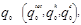
отдельным прибором - согласно обязательному приложению 2;
различными приборами, обслуживающими одинаковых водопотребителей на участка тупиковой сети, - согласно обязательному приложению 3;
различными приборами, обслуживающими разных водопотребителей, - по формуле
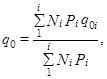
где Pi - вероятность действия санитарно-технических приборов, определенная для каждой группы водопотребителей согласно п. 3.4.
q0i - секундный расход воды (общий, горячей, холодной), л/с, водоразборной арматурой (прибором), принимаемый согласно обязательному приложению 3, для каждой группы водопотребителей.
Примечания: 1. При устройстве кольцевой сети расход воды q0 следует определять для сети в целом и принимать одинаковым для всех участков.
2. В жилых и общественных зданиях и сооружениях, по которым отсутствуют сведения о расходах воды и технических характеристиках санитарно-технических приборов, допускается принимать:
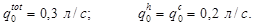
3.3. Максимальный секундный расход воды на расчетном участке сети q (qtot, qh, qc), л/с, следует определять по формуле
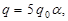
где - секундный расход воды, величину которого следует определять согласно п. 3.2;
a - коэффициент, определяемый согласно рекомендуемому приложению 4 в зависимости от общего числа приборов N на расчетном участке сети и вероятности их действия Р, вычисляемой согласно п. 3.4. При этом табл. 1 рекомендуемого приложения 4 надлежит руководствоваться при Р > 0,1 и N £ 200; при других значениях Р и N коэффициент a следует принимать по табл. 2 рекомендуемого приложения 4.
При известных расчетных величинах Р, N и значениях q0 = 0,1; 0,14; 0,2; 0,3 л/с для вычисления максимального секундного расхода воды допускается пользоваться номограммами 1-4 рекомендуемого приложения 4.
Примечания: 1. Расход воды на концевых участках сети следует принимать по расчету, но не менее максимального секундного расхода воды одним из установленных санитарно-технических приборов.
2. Расход воды на технологические нужды промышленных предприятий следует определять как сумму расхода воды технологическим оборудованием при условии совпадения работы оборудования по времени.
3. Для вспомогательных зданий промышленных предприятий значение q допускается определять как сумму расхода воды на бытовые нужды по формуле (2) и душевые нужды - по числу установленных душевых сеток по обязательному приложению 2.
3.4. Вероятность действия санитарно-технических приборов Р (Ptot, Ph, Рc) на участках сети надлежит определять по формулам:
а) при одинаковых водопотребителях в здании (зданиях) или сооружении (сооружениях) без учета изменения соотношения U/N
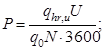
б) при отличающихся группах водопотребителей в здании (зданиях) или сооружении (сооружениях) различного назначения
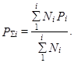
Примечания: 1. При отсутствии данных о числе санитарно-технических приборов в зданиях или сооружениях значение Р допускается определять по формулам (3) и (4), принимая N = U.
2. При нескольких группах водопотребителей, для которых периоды наибольшего потребления воды не будут совпадать по времени суток, вероятность действия приборов для системы в целом допускается вычислять по формулам (3) и (4) с учетом понижающих коэффициентов, определяемых при эксплуатации аналогичных систем.
3.5. Максимальный секундный расход сточных вод qs, л/с, следует определять:
а) при общем максимальном секундном расходе воды qtot £ 8 л/с в сетях холодного и горячего водоснабжения, обслуживающих группу приборов, по формуле
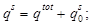
б) в других случаях qs = qtot.
3.6. Часовой
расход воды санитарно-техническим прибором 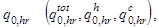
а) при одинаковых водопотребителях в здании (зданиях) или сооружении (сооружениях) согласно обязательному приложению 3;
б) при отличающихся водопотребителях в здании (зданиях) или сооружении (сооружениях) - по формуле
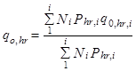
Примечание. В жилых и общественных зданиях (сооружениях), по которым отсутствуют сведения о числе и технических характеристиках санитарно-технических приборов, допускается принимать:
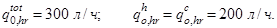
3.7. Вероятность использования санитарно-технических приборов Phr для системы в целом следует определять по формуле
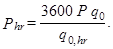
3.8. Максимальный часовой расход воды 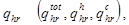
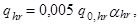
где ahr - коэффициент, определяемый согласно рекомендуемому приложению 4 в зависимости от общего числа приборов N, обслуживаемых проектируемой системой, и вероятности их использования Phr, вычисляемой согласно п. 3.7. При этом табл. 1 рекомендуемого приложения 4 надлежит руководствоваться при Phr > 0,1 и N £ 200, при других значениях Phr и N коэффициент ahr следует принимать по табл. 2 рекомендуемого приложения 4.
Примечание. Для вспомогательных зданий промышленных предприятий значение qhr допускается определять как сумму расходов воды на пользование душами и хозяйственно-питьевые нужды, принимаемых по обязательному приложению 3 по числу водопотребителей в наиболее многочисленной смене.
3.9. Средний часовой расход воды 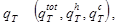
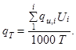
3.10. При проектировании непосредственного водоразбора из трубопроводов тепловой сети на нужды горячего водоснабжения среднюю температуру горячей воды в водоразборных стояках надлежит поддерживать равной 65 °С, а нормы расхода горячей воды принимать согласно обязательному приложению 3 с коэффициентом 0,85, при этом общее количество потребляемой воды не изменять.
3.11. Максимальный часовой расход сточных вод следует принимать равным расчетным расходам, определяемым согласно п. 3.8.
3.12. Суточный расход воды следует определять суммированием расхода воды всеми потребителями с учетом расхода воды на поливку. Суточный расход стоков необходимо принимать равным водопотреблению без учета расхода воды на поливку.
3.13.
Тепловой поток 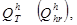
а) в течение среднего часа
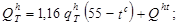
б) в течение часа максимального потребления
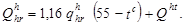
4.1. Системы внутреннего водопровода (хозяйственно-питьевого, производственного, противопожарного) включают: вводы в здания, водомерные узлы, разводящую сеть, стояки, подводки к санитарным приборам и технологическим установкам, водоразборную, смесительную, запорную и регулирующую арматуру. В зависимости от местных условий и технологии производства в систему внутреннего водопровода надлежит включать насосные установки и запасные и регулирующие емкости, присоединенные к системе внутреннего водопровода.
4.2. Выбор системы внутреннего водопровода следует производить в зависимости от технико-экономической целесообразности, санитарно-гигиенических и противопожарных требований, а также с учетом принятой системы наружного водопровода и требований технологии производства.
Соединение сетей хозяйственно-питьевого водопровода с сетями водопроводов, подающих воду непитьевого качества, не допускается.
4.3. Для групп зданий, отличающихся по высоте на 10 м и более, следует предусматривать мероприятия, обеспечивающие в системах водоснабжения этих зданий требуемый напор воды.
Рекомендуется предусматривать кольцевание стояков хозяйственно-питьевого водопровода.
4.4. Производственные системы водопровода должны удовлетворять технологическим требованиям и не вызывать коррозии аппаратуры и трубопроводов, отложения солей и биологического обрастания труб и аппаратов.
4.5. В зданиях (сооружениях) в зависимости от их назначения надлежит предусматривать следующие системы внутренних водопроводов:
хозяйственно-питьевые;
противопожарные;
производственные (одну или несколько).
Систему противопожарного водопровода в зданиях (сооружениях), имеющих системы хозяйственно-питьевого или производственного водопровода, следует, как правило, объединять с одной из них.
4.6. В производственных и вспомогательных зданиях в зависимости от требований технологии производства и в соответствии с указаниями по строительному проектированию предприятий, зданий и сооружений различных отраслей промышленности для сокращения расхода воды надлежит предусматривать системы оборотного водопровода и повторного использования воды.
Примечание. При обосновании оборотные системы допускается не предусматривать.
4.7. Системы оборотного водоснабжения для охлаждения технологических растворов, продукции и оборудования при технической возможности следует проектировать, как правило, без разрыва струи с подачей воды на охладители, используя остаточный напор.
4.8. При проектировании систем водоснабжения необходимо предусматривать мероприятия по снижению непроизводительных расходов воды и снижению шума.
5.1. В зависимости от режима и объема потребления горячей воды на хозяйственно-питьевые нужды зданий и сооружений различного назначения следует предусматривать системы централизованного водоснабжения или местные водонагреватели.
Примечание. При необходимости подачи горячей воды питьевого качества на технологические нужды допускается предусматривать подачу горячей воды одновременно на хозяйственно-питьевые и технологические нужды.
5.2. Не допускается соединять трубопроводы системы горячего водоснабжения с трубопроводами, подающими горячую воду непитьевого качества на технологические нужды, а также непосредственный контакт с технологическим оборудованием и установками горячей воды, подаваемой потребителю с возможным изменением ее качества.
5.3. Выбор схемы подогрева и обработки воды для систем централизованного горячего водоснабжения следует производить согласно СНиП 2.04.07-86* и «Руководству по проектированию тепловых пунктов».
5.4. В системах централизованного горячего водоснабжения следует предусматривать размещение пунктов подогрева воды, как правило, в центре района потребления горячей воды.
5.5. Разрешается не предусматривать циркуляцию горячей воды в системах централизованного горячего водоснабжения с регламентированным по времени потреблением горячей воды, если температура ее в местах водоразбора не будет снижаться ниже установленной в разд. 2 настоящих норм.
5.6.* В зданиях и помещениях лечебно-профилактических учреждений, дошкольных и жилых зданиях в ванных комнатах и душевых следует предусматривать установку полотенцесушителей, присоединяемых к системам горячего водоснабжения, как правило, по схеме, обеспечивающей постоянное обогревание их горячей водой.
Примечания: 1. При подаче горячей воды системами централизованного горячего водоснабжения, присоединенными к теплосетям с непосредственным водоразбором, допускается присоединять полотенцесушители к самостоятельным системам отопления круглогодичного действия ванных комнат и душевых.
2. На полотенцесушителях следует предусматривать запорную арматуру для их отключения в летний период.
5.7. В жилых и общественных зданиях высотой свыше 4 этажей следует объединять группы водоразборных стояков кольцующими перемычками в секционные узлы с присоединением каждого секционного узла одним циркуляционным трубопроводом к сборному циркуляционному трубопроводу системы. В секционные узлы следует объединять от трех до семи водоразборных стояков. Кольцующие перемычки следует прокладывать по теплому чердаку, по холодному чердаку под слоем теплоизоляции, под потолком верхнего этажа при подаче воды в водоразборные стояки снизу или по подвалу при подаче воды в водоразборные стояки сверху.
Примечание. Допускается не закольцовывать водоразборные стояки при протяженности кольцующей перемычки, превышающей суммарную протяженность циркуляционных стояков.
5.8. В зданиях высотой до 4 этажей, а также в зданиях, в которых отсутствует возможность прокладки кольцующих перемычек, допускается устанавливать полотенцесушители:
на циркуляционных стояках системы горячего водоснабжения;
на системе отопления ванных комнат круглогодичного действия, при этом водоразборные стояки и разводящие трубопроводы следует прокладывать совместно с трубопроводами отопления в общей изоляции.
5.9. Присоединение водоразборных приборов к циркуляционным стоякам и циркуляционным трубопроводам не допускается.
5.10. Для сельских населенных мест и поселков выбор типа системы горячего водоснабжения определяется технико-экономическим расчетом.
5.11. Установку баков-аккумуляторов в системе централизованного горячего водоснабжения следует предусматривать согласно разд. 13.
5.12.* Давление в системе горячего водоснабжения у санитарных приборов должно быть не более 0,45 МПа (4,5 кгс/см2).
6.1.* Для жилых и общественных зданий, а также административно-бытовых зданий промышленных предприятий необходимость устройства внутреннего противопожарного водопровода, а также минимальные расходы воды на пожаротушение следует определять в соответствии с табл. 1*, а для производственных и складских зданий - в соответствии с табл. 2.
Расход воды на пожаротушение в зависимости от высоту компактной части струи и диаметра спрыска следует уточнять по табл. 3.
Необходимость устройства систем автоматического пожаротушения надлежит принимать согласно требованиям соответствующих сметных норм и правил и перечней зданий и помещений, подлежащих оборудованию автоматическими средствами пожаротушения, утвержденных министерствами. При этом следует учитывать одновременное действие пожарных кранов и спринклерных или дренчерных установок.
Таблица 1*
|
Жилые, общественные и административно-бытовые здания и помещения |
Число струй |
Минимальный расход воды на внутреннее пожаротушение, л/с, на одну струю |
|
1. Жилые здания: |
||
|
при числе этажей от 12 до 16 |
1 |
2,5 |
|
то же, при общей длине коридора св. 10 м |
2 |
2,5 |
|
при числе этажей св. 16 до 25 |
2 |
2,5 |
|
то же, при общей длине коридора св. 10 м |
3 |
2,5 |
|
высотой от 6 до 10 этажей и объемом до 25 000 м3 |
1 |
2,5 |
|
то же, объемом св. 25 000 м3 |
2 |
2,5 |
|
при числе этажей св. 10 и объемом до 25 000 м3 |
2 |
2,5 |
|
то же, объемом 25 000 м3 |
3 |
2,5 |
|
3. Клубы с эстрадой, театры, кинотеатры, актовые и конференц-залы, оборудованные киноаппаратурой |
Согласно СНиП 2.08.02-89* |
|
|
4. Общежития и общественные здания, неуказанные в поз. 2: |
||
|
при числе этажей до 10 и объемом от 5000 до 25 000 м3 |
1 |
2,5 |
|
то же, объемом св. 25 000 м3 |
2 |
2,5 |
|
при числе этажей св. 10 и объемом до 25 000 м3 |
2 |
2,5 |
|
то же, объемом св. 25 000 м3 |
3 |
2,5 |
|
5. Административно-бытовые здания промышленных предприятий объемом, м3: |
||
|
от 5000 до 25 000 |
1 |
2,5 |
|
св. 25 000 |
2 |
2,5 |
Примечания: 1. Минимальный расход воды для жилых зданий допускается принимать равным 1,5 л/с при наличии пожарных стволов, рукавов и другого оборудования диаметром 38 мм.
2.* За объем здания принимается строительный объем, определяемый в соответствии со СНиП 2.08.02-89*.
6.2. Расход воды и число струй на внутреннее пожаротушение в общественных и производственных зданиях (независимо от категории) высотой свыше 50 м и объемом до 50 000 м3 следует принимать 4 струи по 5 л/с каждая; при большем объеме зданий - 8 струй по 5 л/с каждая.
6.3.* В производственных и складских зданиях, при которых в соответствии с табл. 2 установлена необходимость устройства внутреннего противопожарного водопровода, минимальный расход воды на внутреннее пожаротушение, определенный по табл. 2, следует увеличивать:
при применении элементов каркаса из незащищенных стальных конструкций в зданиях IIIа и IVа степеней огнестойкости, а также из цельной или клееной древесины (в том числе подвергнутой огнезащитной обработке) на 5 л/с (одна струя);
при применении в ограждающих конструкциях зданий IVа степени огнестойкости утеплителей из горючих материалов - на 5 л/с (одна струя) для зданий объемом до 10 тыс. м3; при объеме более 10 тыс. м3 дополнительно на 5 л/с (одна струя) на каждые последующие полные или неполные 100 тыс. м3 объема.
6.4. В помещениях залов с большим пребыванием людей при наличии сгораемой отделки число струй на внутреннее пожаротушение следует принимать на одну больше, чем указано в табл. 1*.
6.5.* Внутренний противопожарный водопровод не требуется предусматривать:
а) в зданиях и помещениях, объемом или высотой менее указанных в табл. 1* и 2;
б) в зданиях общеобразовательных школ, кроме школ-интернатов, в том числе школ, имеющих актовые залы, оборудованные стационарной киноаппаратурой, а также в банях;
в) в зданиях кинотеатров сезонного действия на любое число мест;
г) в производственных зданиях, в которых применение воды может вызвать взрыв, пожар, распространение огня;
д) в производственных зданиях I и II степеней огнестойкости категорий Г и Д независимо от их объема и в производственных зданиях III-V степени огнестойкости объемом не более 5000 м3 категорий Г, Д;
е) в производственных и административно-бытовых зданиях промышленных предприятий, а также в помещениях для хранения овощей и фруктов и в холодильниках, не оборудованных хозяйственно-питьевым или производственным водопроводом, для которых предусмотрено тушение пожаров из емкостей (резервуаров, водоемов);
Таблица 2
|
Категория зданий по пожарной опасности |
Число струй и минимальный расход воды, л/с на одну струю, на внутреннее пожаротушение в производственных и складских зданиях высотой до 50 м и объемом, тыс. м3 |
|||||
|
от 0,5 до 5 |
св. 5 до 50 |
св. 50 до 200 |
св. 200 до 400 |
св. 400 до 800 |
||
|
I и II |
А, Б, В |
2 × 2,5 |
2 × 5 |
2 × 5 |
3 × 5 |
4 × 5 |
|
III |
В |
2 × 2,5 |
2 × 5 |
2 × 5 |
- |
- |
|
III |
Г, Д |
- |
2 × 2,5 |
2 × 2,5 |
- |
- |
|
IV и V |
В |
2 × 2,5 |
2 × 5 |
- |
- |
- |
|
IV и V |
Г, Д |
- |
2 × 2,5 |
- |
- |
- |
Примечания: 1. Для фабрик-прачечных пожаротушение следует предусматривать в помещениях обработки и хранения сухого белья.
2. Расход воды на внутреннее пожаротушение в зданиях или помещениях объемом свыше величин, указанных в табл. 2, следует согласовывать в каждом конкретном случав с территориальными органами пожарного надзора.
3. Количество струй и расход воды одной струи для зданий степени огнестойкости: IIIб - здания преимущественно каркасной конструкции. Элементы каркаса из цельной или клееной древесины и другие горючие материалы ограждающих конструкций (преимущественно из древесины), подвергнутые огнезащитной обработке; IIIа - здания преимущественно с незащищенным металлическим каркасом и ограждающими конструкциями из несгораемых листовых материалов с трудногорючим утеплителем; IVа - здания преимущественно одноэтажные с металлическим незащищенным каркасом и ограждающими конструкциями из листовых несгораемых материалов с горючим утеплителем, принимаются по указанной таблице в зависимости от размещения в них категорий производств как для зданий II и IV степеней огнестойкости с учетом требований пункта 6.3 (приравнивая степени огнестойкости IIIа к II, IIIб и IVа к IV).
Таблица 3
|
Производительность пожарной струи, л/с |
Напор, м, у пожарного крана с рукавами длиной, м |
Производительность пожарной струи, л/с |
Напор, м, у пожарного крана с рукавами длиной, м |
Производительность пожарной струи, л/с |
Напор, м, у пожарного крана с рукавами длиной, м |
|||||||
|
10 |
15 |
20 |
10 |
15 |
20 |
10 |
15 |
20 |
||||
|
Диаметр спрыска наконечника пожарного ствола, мм |
||||||||||||
|
13 |
16 |
19 |
||||||||||
|
Пожарные краны d = 50 мм |
||||||||||||
|
6 |
- |
- |
- |
- |
2,6 |
9,2 |
9,6 |
10 |
3,4 |
8,8 |
9,6 |
10,4 |
|
8 |
- |
- |
- |
- |
2,9 |
12 |
12,5 |
13 |
4,1 |
12,9 |
13,8 |
14,8 |
|
10 |
- |
- |
- |
- |
3,3 |
15,1 |
15,7 |
16,4 |
4,6 |
16 |
17,3 |
18,5 |
|
12 |
2,6 |
20,2 |
20,6 |
21 |
3,7 |
19,2 |
19,6 |
21 |
5,2 |
20,6 |
22,3 |
24 |
|
14 |
2,8 |
23,6 |
24,1 |
24,5 |
4,2 |
24,8 |
25,5 |
26,3 |
- |
- |
- |
- |
|
16 |
3,2 |
31,6 |
32,2 |
32,8 |
4,6 |
29,3 |
30 |
31,8 |
- |
- |
- |
- |
|
18 |
3,6 |
39 |
39,8 |
40,6 |
5,1 |
36 |
38 |
40 |
- |
- |
- |
- |
|
Пожарные краны d = 65 мм |
||||||||||||
|
6 |
- |
- |
- |
- |
2,6 |
8,8 |
8,9 |
9 |
3,4 |
7,8 |
8 |
8,3 |
|
8 |
- |
- |
- |
- |
2,9 |
11 |
11,2 |
11,4 |
4,1 |
11,4 |
11,7 |
12,1 |
|
10 |
- |
- |
- |
- |
3,3 |
14 |
14,3 |
14,6 |
4,6 |
14,3 |
14,7 |
15,1 |
|
12 |
2,6 |
19,8 |
19,9 |
20,1 |
3,7 |
18 |
18,3 |
18,6 |
5,2 |
18,2 |
19 |
19,9 |
|
14 |
2,8 |
23 |
23,1 |
23,3 |
4,2 |
23 |
23,3 |
23,5 |
5,7 |
21,8 |
22,4 |
23 |
|
16 |
3,2 |
31 |
31,3 |
31,5 |
4,6 |
27,6 |
28 |
28,4 |
6,3 |
26,6 |
27,3 |
28 |
|
18 |
3,6 |
38 |
38,3 |
38,5 |
5,1 |
33,8 |
34,2 |
34,6 |
7 |
32,9 |
33,8 |
34,8 |
|
20 |
4 |
46,4 |
46,7 |
47 |
5,6 |
41,2 |
41,8 |
42,4 |
7,5 |
37,2 |
38,5 |
39,7 |
ж) в зданиях складов грубых кормов, пестицидов и минеральных удобрений.
Примечание. Допускается не предусматривать внутренний противопожарный водопровод в производственных зданиях по переработке сельскохозяйственной продукции категории В, I и II степеней огнестойкости, объемом до 5000 м3.
6.6.* Для частей зданий различной этажности или помещений различного назначения необходимость устройства внутреннего противопожарного водопровода и расхода воды на пожаротушение надлежит принимать отдельно для каждой части здания согласно пп. 6.1* и 6.2.
При этом расход воды на внутреннее пожаротушение следует принимать:
для зданий, не имеющих противопожарных стен, - по общему объему здания;
для зданий, разделенных на части противопожарными стенами I и II типов, - по объему той части здания, где требуется наибольший расход воды.
При соединении зданий I и II степеней огнестойкости переходами из несгораемых материалов и установке противопожарных дверей объем здания считается по каждому зданию отдельно; при отсутствии противопожарных дверей - по общему объему зданий и более опасной категории.
6.7.* Гидростатический напор в системе хозяйственно-питьевого или хозяйственно-противопожарного водопровода на отметке наиболее низко расположенного санитарно-технического прибора не должен превышать 45 м.
Гидростатический напор в системе раздельного противопожарного водопровода на отметке наиболее низко расположенного пожарного крана не должен превышать 90 м.
При расчетном давлении в сети противопожарного водопровода, превышающем 0,45 МПа, необходимо предусматривать устройство раздельной сети противопожарного водопровода.
Примечание. При напорах у пожарных кранов более 40 м между пожарным краном и соединительной головкой следует предусматривать установку диафрагм, снижающих избыточный напор. Допускается устанавливать диафрагмы с одинаковым диаметром отверстий на 3-4 этажа здания (см. номограмму 5 рекомендуемого приложения 4).
6.8. Свободные напоры у внутренних пожарных кранов должны обеспечивать получение компактных пожарных струй высотой, необходимой для тушения пожара в любое время суток в самой высокой и удаленной части здания. Наименьшую высоту и радиус действия компактной части пожарной струи следует принимать равными высоте помещения, считая от пола до наивысшей точки перекрытия (покрытия), но не менее:
6 м - в жилых, общественных, производственных и вспомогательных зданиях промышленных предприятий высотой до 50 м;
8 м - в жилых зданиях высотой свыше 50 м;
16 м - в общественных, производственных и вспомогательных зданиях промышленных предприятий высотой свыше 50 м.
Примечания: 1. Напор у пожарных кранов следует определять с учетом потерь напора а пожарных рукавах длиной 10, 15 или 20 м.
2. Для получения пожарных струй с расходом воды до 4 л/с следует применять пожарные краны и рукава диаметром 50 мм, для получения пожарных струй большей производительности - диаметром 65 мм. При технико-экономическом обосновании допускается применять пожарные краны диаметром 50 мм, производительностью свыше 4 л/с.
6.9. Расположение и вместимость водонапорных баков здания должны обеспечивать получение в любое время суток компактной струи высотой не менее 4 м на верхнем этаже или этаже, расположенном непосредственно под баком, и не менее 6 м - на остальных этажах; при этом число струй следует принимать: две производительностью 2,5 л/с каждая в течение 10 мин при общем расчетном числе струй две и более, одну - в остальных случаях.
При установке на пожарных кранах датчиков положения пожарных кранов для автоматического пуска пожарных насосов водонапорные баки допускается не предусматривать.
6.10. Время работы пожарных кранов следует принимать 3 ч. При установке пожарных кранов на системах автоматического пожаротушения время их работы следует принимать равным времени работы систем автоматического пожаротушения.
6.11. В зданиях высотой 6 этажей и более при объединенной системе хозяйственно-противопожарного водопровода пожарные стояки следует закольцовывать поверху. При этом для обеспечения сменности воды в зданиях необходимо предусматривать кольцевание противопожарных стояков с одним или несколькими водоразборными стояками с установкой запорной арматуры.
Стояки раздельной системы противопожарного водопровода рекомендуется соединять перемычками с другими системами водопроводов при условии возможности соединения систем.
На противопожарных системах с сухотрубами, расположенных в неотапливаемых зданиях, запорную арматуру следует располагать в отапливаемых помещениях.
6.12. При определении мест размещения и числа пожарных стояков и пожарных кранов в зданиях необходимо учитывать следующее:
в производственных и общественных зданиях при расчетном числе струй не менее трех, а в жилых зданиях - не менее двух на стояках допускается устанавливать спаренные пожарные краны;
в жилых зданиях с коридорами длиной до 10 м при расчетном числе струй две каждую точку помещения допускается орошать двумя струями, подаваемыми из одного пожарного стояка;
в жилых зданиях с коридорами длиной свыше 10 м, а также в производственных и общественных зданиях при расчетном числе струй две и более каждую точку помещения следует орошать двумя струями - по одной струе из двух соседних стояков (разных пожарных шкафов).
Примечания: 1. Установку пожарных кранов в технических этажах, на чердаках и в техподпольях следует предусматривать при наличии в них сгораемых материалов и конструкций.
2. Число струй, подаваемых из каждого стояка, следует принимать не более двух.
3. При числе струй четыре и болев для получения общего требуемого расхода воды допускается использовать пожарные краны на соседних этажах.
6.13. Пожарные краны следует устанавливать на высоте 1,35 м над полом помещения и размещать в шкафчиках, имеющих отверстия для проветривания, приспособленных для их опломбирования и визуального осмотра без вскрытия. Спаренные пожарные краны допускается устанавливать один над другим, при этом второй кран устанавливается на высоте не менее 1 м от пола.
6.14. В пожарных шкафах производственных, вспомогательных и общественных зданий следует предусматривать возможность размещения двух ручных огнетушителей.
Каждый пожарный кран должен быть снабжен пожарным рукавом одинакового с ним диаметра длиной 10, 15 или 20 м и пожарным стволом.
В здании или частях здания, разделенных противопожарными стенами, следует применять спрыски, стволы и пожарные краны одинакового диаметра и пожарные рукава одной длины.
6.15. Внутренние сети противопожарного водопровода каждой зоны здания высотой 17 этажей и более должны иметь два выведенных наружу пожарных патрубка с соединительной головкой диаметром 80 мм для присоединения рукавов пожарных автомашин с установкой в здании обратного клапана и задвижки, управляемой снаружи.
6.16. Внутренние пожарные краны следует устанавливать преимущественно у входов, на площадках отапливаемых (за исключением незадымляемых) лестничных клеток, в вестибюлях, коридорах, проходах и других наиболее доступных местах, при этом их расположение не должно мешать эвакуации людей.
6.17. В помещениях, оборудуемых установками автоматического пожаротушения, внутренние пожарные краны допускается размещать на водяной спринклерной сети после узлов управления.
7.1. Гидравлический расчет сетей внутренних водопроводов холодной воды необходимо производить по максимальному секундному расходу воды.
7.2. Сети объединенного хозяйственно-противопожарного и производственно-противопожарного водопроводов должны быть проверены на пропуск расчетного расхода воды на пожаротушение при наибольшем расходе ее на хозяйственно-питьевые и производственные нужды, при этом расход воды на пользование душами, мытье полов, поливку территории не учитывается.
Не требуется учитывать также выключение (резервирование) участков водопроводной сети, стояков и оборудования.
Примечание. Для районов жилой застройки на время пожаротушения и ликвидации аварии на сети наружного водопровода подачу воды в закрытую систему горячего водоснабжения допускается не предусматривать.
7.3. При расчете сетей хозяйственно-питьевых, производственных и противопожарных водопроводов следует обеспечивать необходимые напоры воды у приборов, указанные в обязательном приложении 2, и пожарных кранов, расположенных наиболее высоко и в наибольшем отдаления от ввода, с учетом требований п. 7.5.
7.4. Гидравлический расчет водопроводных сетей, питаемых несколькими вводами, следуют производить с учетом выключения одного из них.
При двух вводах каждый из них должен быть рассчитан на 100 %-ный, а при большем количестве вводов - на 50 %-ный расход воды.
7.5. Диаметры труб внутренних водопроводов сетей надлежит назначать из расчета наибольшего использования гарантированного напора воды в наружной водопроводной сети.
Диаметры трубопроводов кольцующих перемычек следует принимать не менее наибольшего диаметра водоразборного стояка.
7.6. Скорость движения воды в трубопроводах внутренних водопроводных сетей, в том числе при пожаротушении, не должна превышать 3 м/с, в спринклерных и дренчерных системах - 10 м/с.
Диаметры трубопроводов водоразборных стояков в секционном узле следует выбирать по расчетному расходу воды в стояке, определенному согласно п. 3.3, с коэффициентом 0,7.
7.7. Потери напора на участках трубопроводов систем холодного водоснабжения Н, м, следует определять по формуле
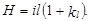
Значения kl следует принимать:
0,3 - в сетях хозяйственно-питьевых водопроводов жилых и общественных зданий;
0,2 - в сетях объединенных хозяйственно-противопожарных водопроводов жилых и общественных зданий, а также в сетях производственных водопроводов;
0,15 - в сетях объединенных производственных противопожарных водопроводов;
0,1 - в сетях противопожарных водопроводов.
7.8. При объединении стояков в секционные узлы потери напора в узле следует определять по формуле
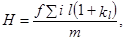
где f - коэффициент, учитывающий характер водоразбора в системе и принимаемый:
0,5 - для систем хозяйственного водопровода;
0,3 - для систем хозяйственно-противопожарного водопровода;
т - число стояков в узле.
8.1. Гидравлический расчет систем горячего водоснабжения следует производить на расчетный расход горячей воды qh,cir с учетом циркуляционного расхода, л/с, определяемого по формуле
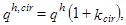
где kcir - коэффициент, принимаемый: для водонагревателей и начальных участков систем до первого водоразборного стояка по обязательному приложению 5; для остальных участков сети - равным 0.
8.2. Циркуляционный расход горячей воды в системе qcir, л/с, следует определять по формуле
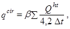
где b - коэффициент разрегулировки циркуляции;
Qht - теплопотери трубопроводами горячего водоснабжения, кВт;
Dt - разность температур в подающих трубопроводах системы от водонагревателя до наиболее удаленной водоразборной точки, °С.
Значения Qht и b в зависимости от схемы горячего водоснабжения следует принимать:
для систем, в которых не предусматривается циркуляция воды по водоразборным стоякам, величину Qht следует определять по подающим и разводящим трубопроводам при Dt = 10 °С и b = 1;
для систем, в которых предусматривается циркуляция воды по водоразборным стоякам с переменным сопротивлением циркуляционных стояков, величину Qht следует определять по подающим разводящим трубопроводам и водоразборным стоякам при Dt = 10 °С и b = 1; при одинаковом сопротивлении секционных узлов или стояков величину Qht следует определять по водоразборным стоякам при Dt = 8,5 °С и b = 1,3;
для водоразборного стояка или секционного узла теплопотери Qht следует определять по подающим трубопроводам, включая кольцующую перемычку, принимая Dt = 8,5 °С и b = 1.
8.3. Потери напора на участках трубопроводов систем горячего водоснабжения следует определять:
для систем, где не требуется учитывать зарастание труб, - в соответствии с п. 7.7;
для систем с учетом зарастания труб - по формуле
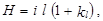
где i - удельные потери напора, принимаемые согласно рекомендуемому приложению 6;
kl - коэффициент, учитывающий потери напора в местных сопротивлениях, значения которого следует принимать:
0,2 - для подающих и циркуляционных распределительных трубопроводов;
0,5 - для трубопроводов в пределах тепловых пунктов, а также для трубопроводов водоразборных стояков с полотенцесушителями;
0,1 - для трубопроводов водоразборных стояков без полотенцесушителей и циркуляционных стояков.
8.4. Скорость движения воды следует принимать в соответствии с п. 7.6.
8.5. Потери напора в подающих и циркуляционных трубопроводах от водонагревателя до наиболее удаленных водоразборных или циркуляционных стояков каждой ветви системы не должны отличаться для разных ветвей более чем на 10 %.
8.6. При невозможности увязки давлений в сети трубопроводов систем горячего водоснабжения путем соответствующего подбора диаметров труб следует предусматривать установку регуляторов температуры или диафрагм на циркуляционном трубопроводе системы.
Диаметр диафрагмы не следует принимать менее 10 мм. Если по расчету диаметр диафрагм необходимо принимать менее 10 мм, то допускается вместо диафрагмы предусматривать установку кранов для регулирования давления.
Диаметр отверстий регулирующих диафрагм dg рекомендуется определять по формуле
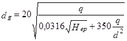
или по номограмме 6 рекомендуемого приложения 4.
8.7. В системах с одинаковым сопротивлением секционных узлов или стояков суммарные потери давления по подающему и циркуляционному трубопроводам в пределах между первым и последним стояками при циркуляционных расходах должны в 1,6 раза превышать потери давления в секционном узле или стояке при разрегулировке циркуляции b = 1,3.
Диаметры трубопроводов циркуляционных стояков следует определять в соответствии с требованиями п. 7.6 при условии, чтобы при циркуляционных расходах в стояках или секционных узлах, определенных в соответствии с п. 8.2, потери давления между точками присоединения их к распределительному подающему и сборному циркуляционному трубопроводам не отличались более чем на 10 %.
8.8. В системах горячего водоснабжения, присоединяемых к закрытым тепловым сетям, потери давления в секционных узлах при расчетном циркуляционном расходе следует принимать 0,03-0,06 МПа (0,3-0,6 кгс/см2).
8.9. В системах горячего водоснабжения с непосредственным водоразбором из трубопроводов тепловой сети потери давления в сети трубопроводов следует определять с учетом напора в обратном трубопроводе тепловой сети.
Потери давления в циркуляционном кольце трубопроводов системы при циркуляционном расходе не должны, как правило, превышать 0,02 МПа (0,2 кгс/см2).
8.10. В душевых с числом душевых сеток свыше трех распределительный трубопровод следует, как правило, предусматривать закольцованным.
Одностороннюю подачу горячей воды допускается предусматривать при коллекторном распределении.
8.11. При зонировании систем горячего водоснабжения допускается предусматривать возможность организации в ночное время естественной циркуляции горячей воды в верхней зоне.
СЕТИ ВНУТРЕННЕГО ВОДОПРОВОДА ХОЛОДНОЙ ВОДЫ
9.1. Системы внутренних водопроводов холодной воды следует принимать:
тупиковыми, если допускается перерыв в подаче воды и при числе пожарных кранов до 12;
кольцевыми или с закольцованными вводами при двух тупиковых трубопроводах с ответвлениями к потребителям от каждого из них для обеспечения непрерывной подачи воды.
Кольцевые сети должны быть присоединены к наружной кольцевой сети не менее чем двумя вводами.
Два ввода и более следует предусматривать для:
зданий, в которых установлено свыше 12 пожарных кранов;
жилых зданий с числом квартир свыше 400, клубов с эстрадой, кинотеатров с числом мест свыше 300;
театров и клубов со сценой независимо от числа мест;
зданий, оборудованных спринклерными и дренчерными системами при числе узлов управления свыше трех;
бань при числе мест 200 и более;
прачечных на 2 т и более белья в смену.
9.2. При устройстве двух вводов и более следует предусматривать присоединение их, как правило, к различным участкам наружной кольцевой сети водопровода. Между вводами в здание на наружной сети следует устанавливать задвижки или вентили для обеспечения подачи воды в здание при аварии на одном из участков сети.
9.3. При необходимости установки в здании насосов для повышения давления во внутренней сети водопровода вводы должны быть объединены перед насосами с установкой задвижки на соединительном трубопроводе для обеспечения подачи воды каждым насосом из любого ввода.
При устройстве на каждом вводе самостоятельных насосных установок объединения вводов не требуется.
9.4. На вводах водопровода необходимо предусматривать установку обратных клапанов, если на внутренней водопроводной сети устанавливается несколько вводов, имеющих измерительные устройства и соединенных между собой трубопроводами внутри здания.
Примечание. В отдельных случаях, когда измерительные устройства не предусматриваются, обратные клапаны устанавливать не следует.
9.5. Расстояние по горизонтали в свету между вводами хозяйственно-питьевого водопровода и выпусками канализации и водостоков должно быть не менее 1,5 м при диаметре ввода до 200 мм включ. и не менее 3 м - при диаметре ввода свыше 200 мм. Допускается совместная прокладка вводов водопровода различного назначения.
9.6. На вводах трубопроводов следует предусматривать упоры в местах поворота в вертикальной или горизонтальной плоскости, когда возникающие усилия не могут быть восприняты соединениями труб.
9.7. Пересечение ввода со стенами подвала следует выполнять в сухих грунтах с зазором 0,2 м между трубопроводом и строительными конструкциями с заделкой отверстия в стене водонепроницаемым и газонепроницаемым (в газифицированных районах) эластичными материалами, в мокрых грунтах - с установкой сальников.
9.8. Прокладку разводящих сетей внутреннего водопровода в жилых и общественных зданиях следует предусматривать в подпольях, подвалах, технических этажах и на чердаках, а в случае отсутствия чердаков - на первом этаже в подпольных каналах совместно с трубопроводами отопления или под полом с устройством съемного фриза, а также по конструкциям зданий, по которым допускается открытая прокладка трубопроводов, или под потолком верхнего этажа. Прокладку стояков и разводки внутреннего водопровода следует предусматривать в шахтах, открыто - по стенам душевых, кухонь и других помещений.
Скрытую прокладку трубопроводов следует предусматривать для помещений, к отделке которых предъявляются повышенные требования, и для всех систем из пластмассовых труб (кроме располагаемых в санитарных узлах).
Скрытая прокладка стальных трубопроводов, соединяемых на резьбе, за исключением угольников для присоединения настенной водоразборной арматуры, не имеющей доступа к стыковым соединениям, не допускается.
Примечания: 1. Борозды в стенах следует заделывать штукатуркой по сетке или облицовкой, а в местах установки арматуры - предусматривать дверки.
2. В жилых зданиях допускается применение коллекторной системы с присоединением водоразборной арматуры гибкими пластмассовыми автономными подводками.
9.9. Прокладку сетей водопровода внутри производственных зданий, как правило, следует предусматривать открытой - по фермам, колоннам, стенам и под перекрытиями. При невозможности открытой прокладки допускается предусматривать размещение водопроводных сетей в общих каналах с другими трубопроводами, кроме трубопроводов, транспортирующих легковоспламеняющиеся, горючие или ядовитые жидкости и газы. Совместную прокладку хозяйственно-питьевых водопроводов с канализационными трубопроводами допускается принимать только в проходных каналах, при этом трубопроводы канализации следует размещать ниже водопровода. Специальные каналы для прокладки водопроводов следует проектировать при обосновании и только в исключительных случаях. Трубопроводы, подводящие воду к технологическому оборудованию, допускается прокладывать в полу или под полом.
9.10. Сеть холодного водопровода при совместной прокладке в каналах с трубопроводами, транспортирующими горячую воду или пар, необходимо размещать ниже этих трубопроводов с устройством термоизоляции.
9.11. Прокладку трубопроводов следует предусматривать с уклоном не менее 0,002.
9.12. Трубопроводы, кроме пожарных стояков, прокладываемые в каналах, шахтах, кабинах, тоннелях, а также в помещениях с повышенной влажностью, следует изолировать от конденсации влаги.
9.13. Прокладку внутреннего холодного водопровода круглогодичного действия следует предусматривать в помещениях с температурой воздуха зимой выше 2 °С. При прокладке трубопроводов в помещениях с температурой воздуха ниже 2 °С, необходимо предусматривать мероприятия по предохранению трубопроводов от замерзания.
При возможности кратковременного снижения температуры в помещении до 0 °С и ниже, а также при прокладке труб в зоне влияния наружного холодного воздуха (вблизи наружных входных дверей и ворот) следует предусматривать тепловую изоляцию труб.
СЕТИ ВНУТРЕННЕГО ВОДОПРОВОДА ГОРЯЧЕЙ ВОДЫ
9.14. Системы горячего водоснабжения следует проектировать с учетом требований пп. 9.1; 9.8 и 9.9.
9.15. Устройства для выпуска воздуха следует предусматривать в верхних точках трубопроводов систем горячего водоснабжения. Выпуск воздуха из системы трубопроводов допускается предусматривать также через водоразборную арматуру, расположенную в верхних точках системы (верхних этажах).
В нижних точках систем трубопроводов следует предусматривать спускные устройства.
Примечание. При установке в нижних точках систем трубопроводов водоразборной арматуры дополнительных спускных устройств предусматривать не следует.
9.16.* Тепловую изоляцию необходимо предусматривать для подающих и циркуляционных трубопроводов систем горячего водоснабжения, включая стояки, кроме подводок к водоразборным приборам.
Толщина теплоизоляционного слоя конструкции должна быть не менее 10 мм, а теплопроводность теплоизоляционного материала не менее 0,05 Вт/(м×°С).
9.17. При проектировании трубопроводов следует предусматривать возможность компенсации температурных удлинений труб.
10.1.* Для внутренних трубопроводов холодной и горячей воды следует применять пластмассовые трубы и фасонные изделия из полиэтилена, полипропилена, поливинилхлорида, полибутилена, металлополимерные, из стеклопластика и других пластмассовых материалов - для всех сетей водоснабжения, кроме раздельной сети противопожарного водоснабжения.
Для всех сетей внутреннего водоппровода допускается применять медные, бронзовые и латунные трубы, фасонные изделия, а также стальные с внутренним и наружным защитным покрытием от коррозии.
Для сельскохозяйственных предприятий допускается применять асбестоцементные трубы.
Прокладка пластмассовых труб должна предусматриваться преимущественно скрытой: в плинтусах, штробах, шахтах и каналах. Допускается открытая прокладка подводок к санитарно-техническим приборам, а также в местах, где исключается механическое повреждение пластмассовых трубопроводов.
Для хозяйственно-питьевого холодного и горячего водопровода следует применять трубы из материалов, разрешенных для применения Госкомсанэпиднадзором России.
Трубы и фасонные изделия должны выдерживать:
пробное давление воды, превышающее рабочее давление в сети в 1,5 раза, но не менее 0,68 МПа, при постоянной температуре холодной воды - 20 °С, а горячей - 75 °С;
пробное давление воды, равное рабочему давлению в сети горячего водоснабжения, но не менее 0,45 МПа, при температуре воды (при испытаниях) 90 °С;
постоянное давление воды, равное рабочему давлению воды в сети, но не менее 0,45 МПа, при постоянной температуре холодной воды - 20 °С в течение 50-летнего расчетного периода эксплуатации, а при постоянной температуре горячей воды - 75 °С в течение 25-летнего расчетного периода эксплуатации.
10.2. Трубопроводы из сгораемых материалов, прокладываемые в помещениях категорий А, Б и В по пожарной опасности, следует защищать от возгорания.
10.3. Трубопроводную, водоразборную и смесительную арматуру для систем хозяйственно-питьевого водопровода следует устанавливать на рабочее давление 0,6 МПа (6 кгс/см2); арматуру для отдельных противопожарных систем и хозяйственно-противопожарного водопровода - на рабочее давление не более 1,0 МПа (10 кгс/см2); арматуру для отдельных производственных систем водопровода - на рабочее давление, принимаемое по технологическим требованиям.
10.4. Конструкция водоразборной и запорной арматуры должна обеспечивать плавное закрывание и открывание потока воды. Задвижки (затворы) необходимо устанавливать на трубах диаметром 50 мм и более.
Примечания: 1. При закольцованных по вертикали стояках допускается устанавливать на них в верхней части и на перемычках пробковые сальниковые краны. У основания стояка следует предусматривать вентиль и спускную пробку.
2. Допускается при обосновании применять вентили диаметром 50 и 65 мм.
10.5. Установку запорной арматуры на внутренних водопроводных сетях надлежит предусматривать:
на каждом вводе;
на кольцевой разводящей сети для обеспечения возможности выключения на ремонт ее отдельных участков (не более чем полукольца);
на кольцевой сети производственного водопровода холодной воды из расчета обеспечения двусторонней подачи воды к агрегатам, не допускающим перерыва в подаче воды;
у основания пожарных стояков с числом пожарных кранов 5 и более;
у основания стояков хозяйственно-питьевой или производственной сети в зданиях высотой 3 этажа и более;
на ответвлениях, питающих 5 водоразборных точек и более;
на ответвлениях от магистральных линий водопровода;
на ответвлениях в каждую квартиру или номер гостиницы, на подводках к смывным бачкам, смывным кранам и водонагревательным колонкам, на ответвлениях к групповым душам и умывальникам;
у оснований подающих и циркуляционных стояков в зданиях и сооружениях высотой 3 этажа и более;
на ответвлениях трубопровода к секционным узлам;
перед наружными поливочными кранами;
перед приборами, аппаратами и агрегатами специального назначения (производственными, лечебными, опытными и др.) в случае необходимости.
Примечания: 1. Запорную арматуру следует предусматривать у основания и на верхних концах закольцованных по вертикали стояков.
2. На кольцевых участках необходимо предусматривать арматуру, обеспечивающую пропуск воды в двух направлениях.
3. Запорную арматуру на водопроводных стояках, проходящих через встроенные магазины, столовые, рестораны и другие помещения, недоступные для осмотра в ночное время, следует устанавливать в подвале, техническом подполье или техническом этаже, к которым имеется постоянный доступ.
4. При установке на ответвлении в квартиру запорной арматуры, в том числе при коллекторной системе, установку ее у смывных бачков допускается не предусматривать.
5. Запорную арматуру на вводе, при наличии ее у водомерного узла, допускается на предусматривать.
6. В жилых и общественных зданиях высотой 7 этажей и более с одним пожарным стояком в средней части стояка необходимо предусматривать ремонтную задвижку.
10.6. При расположении водопроводной арматуры диаметром 50 мм и более на высоте свыше 1,6 м от пола следует предусматривать стационарные площадки или мостики для ее обслуживания.
Примечание. При высоте расположения арматуры до 3 м и диаметре до 150 мм допускается использовать передвижные вышки, стремянки и приставные лестницы с уклоном не более 60° при условии соблюдения правил техники безопасности.
10.7. На внутреннем водопроводе необходимо предусматривать на каждые 60-70 м периметра здания по одному поливочному крану, размещаемому в коверах около зданий или в нишах наружных стен зданий.
Примечание. Для зданий, расположенных в климатических подрайонах IА, IБ и IГ, а также на территории промышленных предприятий установку поливочных кранов следует предусматривать в зависимости от степени благоустройства, наличия зеленых насаждений и других местных условий, а также способа полива.
10.8. Питьевые фонтанчики или установки для снабжения газированной водой следует предусматривать на расстоянии не более 75 м от рабочих мест в зданиях. Типы приборов и места их расположения устанавливаются строительной частью проекта.
10.9.* Для обеспечения заданного давления в системе водоснабжения здания следует предусматривать установку регуляторов давления:
на вводе водопровода в здание, если давление в наружной сети превышает величины, установленные в п. 6.7;
на секционных (по высоте) участках водопровода в зданиях высотой более 40 м.
Для обеспечения нормативного расхода воды водоразборной арматурой рекомендуется, как правило, предусматривать установку регуляторов расхода воды на водоразборной арматуре, при этом расход воды водоразборной арматурой не должен превышать секундный расход воды по обязательному приложению 2 при давлении воды более 0,1 МПа и допустимых отклонениях расхода ± 10 %.
10.10. Установку регуляторов давления на вводах систем водоснабжения в здания и микрорайоны следует предусматривать после отключающей задвижки водомерного узла или насосов хозяйственно-питьевого водоснабжения, при этом после регулятора надлежит предусматривать установку задвижки. Для контроля за работой и наладкой регулятора давления до и после него должны быть установлены манометры. Установку регулятора давления на вводе в квартиру следует предусматривать после запорной арматуры на вводе.
10.11. В мусорокамерах жилых зданий следует устанавливать поливочный кран с подведением холодной и горячей воды. При высоте здания 10 этажей и более, кроме того, следует предусматривать установку спринклера.
10.12. Установку поливочных кранов надлежит предусматривать:
в гардеробах рабочей одежды загрязненных производств;
в общественных уборных;
в уборных с тремя унитазами и более;
в умывальных помещениях с пятью умывальниками и более;
в душевых помещениях с тремя душами и более;
в помещениях, при необходимости мокрой уборки полов.
Примечание. Для зданий и сооружений, оборудованных системой горячего водоснабжения, к поливочным кранам следует предусматривать подведение холодной и горячей воды.
10.13. При проектировании внутреннего водопровода холодной и горячей воды следует предусматривать мероприятия по борьбе с шумом и вибрацией арматуры и трубопроводов.
Пункт 10.14 исключить.
10.15. В системах горячего водоснабжения для подачи воды следует предусматривать установку смесителей с раздельной подводкой к ним горячей и холодной воды.
Допускается не предусматривать установку смесителей в системах горячего водоснабжения, если для водоразбора подача воды принята без подмешивания холодной воды.
10.16. Установку обратных клапанов в системах горячего водоснабжения следует предусматривать:
на участках трубопроводов, подающих воду к групповым смесителям;
на циркуляционном трубопроводе перед присоединением его к водонагревателям;
на ответвлениях от обратного трубопровода тепловой сети к терморегулятору;
на циркуляционном трубопроводе перед присоединением его к обратному трубопроводу тепловой сети в системах с непосредственным водоразбором из трубопроводов тепловых сетей.
10.17. При проектировании систем горячего водоснабжения следует применять промышленную трубопроводную арматуру общего назначения. Запорную арматуру диаметром до 50 мм включ. следует применять бронзовую, латунную или из термостойких пластмасс.
10.18. Уплотнительные прокладки и сальниковые уплотнители для арматуры системы горячего водоснабжения следует предусматривать из термостойких материалов, разрешенных к применению Главэпиднадзором России.
Не допускается использовать для этих целей материалы, которые могут ухудшить качество горячей воды (вызвать запах, изменение цвета и др.).
10.19. Дросселирующие диафрагмы для системы горячего водоснабжения следует предусматривать из полимерных материалов, латуни или нержавеющей стали.
10.20. Регуляторы давления в системах горячего водоснабжении при необходимости следует устанавливать с учетом требований пп. 10.9 и 10.10.
11.1.* Для вновь строящихся, реконструируемых и капитально ремонтируемых зданий с системами холодного и горячего водоснабжения, а также только холодного водоснабжения следует предусматривать приборы измерения водопотребления - счетчики холодной и горячей воды, параметры которых должны соответствовать действующим стандартам.
Счетчики воды следует устанавливать на вводах трубопровода холодного и горячего водоснабжения в каждое здание и сооружение, в каждую квартиру жилых зданий и на ответвлениях трубопроводов в магазины, столовые, рестораны и другие помещения, встроенные или пристроенные к жилым, производственным и общественным зданиям.
Установка счетчиков воды на системах раздельного противопожарного водопровода не требуется.
На ответвлениях к отдельным помещениям общественных и производственных зданий, а также на подводках к отдельным санитарно-техническим приборам и к технологическому оборудованию счетчики воды устанавливаются по требованию заказчика.
Счетчики горячей воды (на температуру воды до 90 °С) следует устанавливать на подающем и циркуляционном трубопроводах горячего водоснабжения (при двухтрубных сетях) с установкой обратного клапана на циркуляционном трубопроводе.
11.2. Диаметр условного прохода счетчика воды следует выбирать исходя из среднечасового расхода воды за период потребления (сутки, смену), который не должен превышать эксплуатационный, принимаемый по табл. 4*, и проверять согласно указаниям п. 11.3*.
11.3.* Счетчик с принятым диаметром условного прохода надлежит проверять:
а) на пропуск расчетного максимального секундного расхода воды, при этом потери напора в счетчиках воды не должны превышать: 5,0 м - для крыльчатых и 2,5 - для турбинных счетчиков;
б) на пропуск максимального (расчетного) секундного расхода воды с учетом подачи расчетного расхода воды на внутреннее пожаротушение, при этом потери напора в счетчике не должны превышать 10 м.
11.4. Потери давления в счетчиках h, м, при расчетном секундном расходе воды q (qtot, qc, qh), л/с, следует определять по формуле
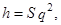
где S - гидравлическое сопротивление счетчика, принимаемое согласно табл. 4.
При необходимости измерения расхода воды и невозможности использовать для этой цели счетчики воды следует применять расходомеры других типов. Выбор диаметра условного прохода и установку расходомеров надлежит производить согласно требованиям соответствующих технических условий.
11.5.* Счетчики холодной и горячей воды следует устанавливать в удобном для снятия показаний и обслуживания эксплуатационным персоналом месте, в помещении с искусственным или естественным освещением и температурой внутреннего воздуха не ниже 5 °С.
Таблица 4*
|
Параметры |
||||||
|
расход воды, м3/ч |
порог чувствительности, м3/ч, не более |
максимальный объем воды за сутки, м3 |
гидравлическое
сопротивление счетчика S, 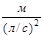 |
|||
|
минимальный |
эксплуатационный |
максимальный |
||||
|
15 |
0,03 |
1,2 |
3 |
0,015 |
45 |
14,5 |
|
20 |
0,05 |
2 |
5 |
0,025 |
70 |
5,18 |
|
25 |
0,07 |
2,8 |
7 |
0,035 |
100 |
2,64 |
|
32 |
0,1 |
4 |
10 |
0,05 |
140 |
1,3 |
|
40 |
0,16 |
6,4 |
16 |
0,08 |
230 |
0,5 |
|
50 |
0,3 |
12 |
30 |
0,15 |
450 |
0,143 |
|
65 |
1,5 |
17 |
70 |
0,6 |
610 |
810×10-5 |
|
80 |
2 |
36 |
110 |
0,7 |
1300 |
264×10-5 |
|
100 |
3 |
65 |
180 |
1,2 |
2350 |
76,6×10-5 |
|
150 |
4 |
140 |
350 |
1,6 |
5100 |
13×10-5 |
|
200 |
6 |
210 |
600 |
3 |
7600 |
3,5×10-5 |
|
250 |
15 |
380 |
1000 |
7 |
13700 |
1,8×10-5 |
11.6. С каждой стороны счетчиков следует предусматривать прямые участки трубопроводов, длина которых определяется в соответствии с государственными стандартами на счетчики для воды (крыльчатые и турбинные) вентили или задвижки. Между счетчиком и вторым (по движению воды) вентилем или задвижкой следует устанавливать спускной кран.
11.7.* Обводную линию у счетчиков холодной воды следует предусматривать, если:
имеется один ввод водопровода в здание;
счетчик воды не рассчитан на пропуск противопожарного расхода воды.
На обводной линии следует устанавливать задвижку, опломбированную в закрытом положении. Задвижка для пропуска противопожарного расхода воды должна быть с электроприводом.
Обводную линию следует рассчитывать на максимальный (с учетом противопожарного) расход воды.
Задвижка с электроприводом должна открываться автоматически от кнопок, установленных у пожарных кранов, или от устройств противопожарной автоматики. Открытие задвижки должно быть сблокировано с пуском пожарных насосов при недостаточном давлении в водопроводной сети.
Обводную линию у счетчика горячей воды предусматривать не следует.
11.8. Для районов жилой застройки на время пожаротушения подачу воды в систему горячего водоснабжения допускается не предусматривать. При этом необходимо обеспечивать автоматическое отключение подачи воды в эту систему.
12.1. При постоянном или периодическом недостатке напора в системах водоснабжения, а также при необходимости поддержания принудительной циркуляции в централизованных системах горячего водоснабжения надлежит предусматривать устройство насосных установок.
12.2. Тип насосной установки и режим ее работы следует определять на основании технико-экономического сравнения разработанных вариантов:
непрерывно или периодически действующих насосов при отсутствии регулирующих емкостей;
насосов производительностью, равной или превышающей максимальный часовой расход воды, работающих в повторно-кратковременном режиме совместно с гидропневматическими или водонапорными баками;
непрерывно или периодически действующих насосов производительностью менее максимального часового расхода воды, работающих совместно с регулирующей емкостью.
12.3. Насосные установки, подающие воду на хозяйственно-питьевые, противопожарные и циркуляционные нужды, следует, как правило, располагать в помещениях тепловых пунктов, бойлерных и котельных.
12.4. Располагать насосные установки (кроме пожарных) непосредственно под жилыми квартирами, детскими или групповыми комнатами детских садов и яслей, классами общеобразовательных школ, больничными помещениями, рабочими комнатами административных зданий, аудиториями учебных заведений и другими подобными помещениями не допускается.
Насосные установки с противопожарными насосами и гидропневматические баки для внутреннего пожаротушения допускается располагать в первых и подвальных этажах зданий I и II степени огнестойкости из несгораемых материалов. При этом помещения насосных установок и гидропневматических баков должны быть отапливаемыми, выгорожены противопожарными стенами (перегородками) и перекрытиями и иметь отдельный выход наружу или на лестничную клетку.
Примечания: 1. В отдельных случаях по согласованию с местными органами санитарно-эпидемиологической службы допускается располагать насосные установки рядом с перечисленными помещениями, при этом суммарный уровень шума в помещениях не должен превышать 30 дБ.
2. Помещения с гидропневматическими баками располагать непосредственно (рядом, сверху, снизу) с помещениями, где возможно одновременное пребывание большого числа людей - 50 чел. и более (зрительный зал, сцена, гардеробная и т. п.), не допускается.
Гидропневматические баки допускается располагать в технических этажах.
При проектировании гидропневматических баков следует учитывать требования «Правил устройства и безопасной эксплуатации сосудов, работающих под давлением» Госгортехнадзора СССР. При этом необходимость регистрации гидропневматических баков устанавливается пп. 6-2-1 и 6-2-2 указанных Правил.
3. Не допускается располагать противопожарные насосные установки в зданиях, в которых прекращается подача электроэнергии во время отсутствия обслуживающего персонала.
12.5. Насосные установки, обслуживающие отдельные кварталы городской застройки, а также производственные насосные установки, следует проектировать в соответствии со СНиП 2.04.02-84*.
Устройство зон санитарной охраны для насосных установок, подающих воду на хозяйственно-питьевые или хозяйственно-противопожарные нужды, работающих без разрыва струи, предусматривать не требуется.
12.6. Насосные установки для производственных нужд следует размещать, как правило, непосредственно в цехах, потребляющих воду. При необходимости следует предусматривать ограждение насосной установки.
12.7. Производительность хозяйственно-питьевых и производственных насосных установок следует принимать:
при отсутствии регулирующей емкости - не менее максимального секундного расхода воды;
при наличии водонапорного или гидропневматического бака и насосов, работающих в повторно-кратковременном режиме, - не менее максимального часового расхода воды;
при максимальном использовании регулирующей емкости водонапорного бака или резервуара - согласно разд. 13.
12.8. При наличии в зданиях и сооружениях систем холодного и централизованного горячего водоснабжения при закрытой схеме теплоснабжения надлежит, как правило, предусматривать повысительную насосную установку для подачи общего расхода воды на холодное и горячее водоснабжение.
12.9. Напор для системы холодного и горячего водоснабжения Hp, развиваемый повысительной насосной установкой, следует определять с учетом наименьшего гарантированного напора в наружной водопроводной сети по формуле
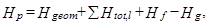
где åHtot,l - сумма потерь напора в трубопроводах системы водоснабжения, м, определяемых согласно разд. 7, 8 и 11.
Примечание. При необходимости следует производить проверку давления в системе в часы минимального водопотребления с учетом максимального давления в наружной сети водопровода.
12.10. Требуемый напор повысительной установки для системы горячего водоснабжения, в которой разность давления в системе холодного и горячего водоснабжения превышает 0,1 МПа при применении циркуляционно-повысительных насосов, определяется по формуле
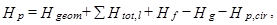
где Hp,cir - напор циркуляционно-повысительного насоса, м.
12.11. В централизованных системах горячего водоснабжения при недостаточном давлении воды в городском водопроводе в ночные часы в качестве дополнительных повысительных насосов надлежит использовать циркуляционные насосы, устанавливаемые на подающем трубопроводе.
12.12. В местной повысительной насосной установке надлежит предусматривать параллельную работу насосов.
При колебаниях давлений в наружной сети водопровода свыше 0,2 МПа (20 м) для жилых зданий следует предусматривать последовательную работу повысительных насосов с автоматическим включением в зависимости от требуемого давления.
12.13. При давлении в наружной сети водопровода менее 0,05 МПа (0,5 кгс/см2) следует перед насосной установкой предусматривать устройство приемного резервуара, емкость которого следует определять согласно разд. 13.
12.14. Повысительно-циркуляционный насос следует подбирать по расчетному расходу горячей воды qh,cir, определяемому согласно п. 8.1.
12.15. Проектирование насосных установок и определение числа резервных агрегатов следует выполнять согласно СНиП 2.04.02-84* с учетом параллельной или последовательной работы насосов в каждой ступени.
12.16. На напорной линии у каждого насоса следует предусматривать обратный клапан, задвижку и манометр, а на всасывающей - установку задвижки и манометра.
При работе насоса без подпора на всасывающей линии задвижку устанавливать на ней не требуется.
12.17. Насосные агрегаты следует устанавливать на виброизолирующих основаниях. На напорных и всасывающих линиях следует предусматривать установку виброизолирующих вставок.
Виброизолирующие основания и виброизолирующие вставки допускается не предусматривать:
в производственных зданиях, где не требуется защита от шума;
в противопожарных насосных установках;
в отдельно стоящих зданиях центральных тепловых пунктов (ЦТП) при расположении их до ближайшего здания не менее 25 м.
12.18. Насосные установки с гидропневматическими баками следует проектировать с переменным давлением. Пополнение запаса воздуха в баке надлежит осуществлять, как правило, компрессорами с автоматическим или ручным пуском или от общезаводской компрессорной станции.
12.19. В системах горячего водоснабжения промышленных предприятий резервный циркуляционный насос допускается не устанавливать. В зданиях и сооружениях с режимом эксплуатации в одну или две смены следует предусматривать возможность выключения циркуляционных насосов систем горячего водоснабжении. Включение циркуляционных насосов должно обеспечивать получение расчетной температуры воды у санитарных приборов к началу водоразбора.
12.20. При проектировании циркуляционно-повысительных насосов необходимо предусматривать мероприятия по защите систем горячего водоснабжения от повышенных давлений в часы малого водоразбора или в его отсутствие.
12.21. Насосные установки для противопожарных целей следует проектировать с ручным или дистанционным управлением, а для зданий высотой свыше 50 м, домов культуры, конференц-залов, актовых залов и для зданий, оборудованных спринклерными и дренчерными установками, - с ручным, автоматическим и дистанционным управлением.
Примечания: 1. Сигнал автоматического или дистанционного пуска должен поступать на насосные агрегаты после автоматической проверки давления воды в системе. Пои достаточном давлении в системе пуск насоса должен автоматически отменяться до момента снижения давления, требующего включения насосного агрегата.
2. Допускается для пожаротушения использовать хозяйственные насосы при условии подачи расчетного расхода и автоматической проверки давления воды. Хозяйственные насосы при этом должны удовлетворять требованиям, предъявляемым к пожарным насосам. При снижении давления ниже допустимого автоматически должен включаться пожарный насос.
3. Одновременно с сигналом автоматического или дистанционного пуска насосов для противопожарных целей, открытием пожарного крана, вскрытием спринклерного оросителя или включением (ручным или автоматическим) дренчерной системы должен поступать сигнал для открытия электрифицированной задвижки на обводной линии водомера на вводе водопровода.
12.22. При дистанционном пуске пожарных насосных установок пусковые кнопки следует устанавливать в шкафах у пожарных кранов. При автоматическом и дистанционном включении пожарных насосов необходимо одновременно подать сигнал (световой и звуковой) в помещение пожарного поста или другое помещение с круглосуточным пребыванием обслуживающего персонала.
12.23. Для насосных установок, подающих воду на хозяйственно-питьевые, производственные и противопожарные нужды, необходимо принимать следующую категорию надежности электроснабжения:
I - при расходе воды на внутреннее пожаротушение свыше 2,5 л/с, а также для насосных установок, перерыв в работе которых не допускается;
II - при расходе воды на внутреннее пожаротушение 2,5 л/с; для жилых зданий высотой 10-16 этажей при суммарном расходе воды 5 л/с, а также для насосных установок, допускающих кратковременный перерыв в работе на время, необходимое для ручного включения резервного питания.
Примечания: 1. При невозможности по местным условиям осуществить питание насосных установок I категории от двух независимых источников электроснабжения допускается осуществлять питание их от одного источника при условии подключения к разным линиям напряжением 0,4 кВ и к разным трансформаторам двухтрансформаторной подстанции или трансформаторам двух ближайших однотрансформаторных подстанций (с устройством АВР).
2. При невозможности обеспечения необходимой надежности электроснабжения насосных установок допускается устанавливать резервные насосы с приводом от двигателей внутреннего сгорания. При этом не допускается, размещать их в подвальных помещениях.
12.24. Насосные установки систем холодного водоснабжения, циркуляционные и циркуляционно-повысительные насосные системы горячего водоснабжения надлежит проектировать с ручным, дистанционным или автоматическим управлением.
При автоматическом управлении повысительной насосной установкой должны предусматриваться:
автоматический пуск и отключение рабочих насосов в зависимости от требуемого давления в системе;
автоматическое включение резервного насоса при аварийном отключении рабочего насоса;
подача звукового или светового сигнала об аварийном отключении рабочего насоса.
12.25. При заборе воды из резервуара следует предусматривать установку насосов «под залив». В случае размещения насосов выше уровня воды в резервуаре следует предусматривать устройства для заливки насосов или устанавливать самовсасывающие насосы.
12.26. При заборе воды насосами из резервуаров следует предусматривать не менее двух всасывающих линий. Расчет каждой из них следует производить на пропуск расчетного расхода воды, включая противопожарный.
Устройство одной всасывающей линии допускается при установке насосов без резервных агрегатов.
12.27. Трубопроводы в насосных станциях, а также всасывающие линии за пределами насосных станций следует проектировать из стальных труб на сварке с применением фланцевых соединений для присоединения к насосам и арматуре.
В заглубленных и полузаглубленных насосных станциях следует предусматривать мероприятия для сбора и удаления случайных стоков воды в соответствии с требованиями СНиП 2.04.02-84*.
13.1. Запасные и регулирующие емкости (водонапорные башни, резервуары, гидропневматические баки, аккумуляторы теплоты и др.) должны содержать воду в объеме, достаточном для регулирования водопотребления. При наличии противопожарных устройств указанные емкости холодного водопровода должны также содержать неприкосновенный противопожарный запас воды. Для обеспечения сохранности неприкосновенного противопожарного запаса воды и невозможности его использования на другие нужды надлежит предусматривать специальные устройства.
Тип емкости, целесообразность ее устройства и место расположения надлежит определять на основании технико-экономических расчетов.
Примечание. Гидропневматические баки для хранения противопожарного запаса воды применять не рекомендуется, но должен приниматься минимальный объем воды, обеспечивающий гарантированное включение противопожарных насосов от датчиков уровня или давления.
13.2. Безнапорные баки-аккумуляторы в системах холодного и горячего водоснабжения следует предусматривать для создания запаса воды в банях, прачечных и у других потребителей, имеющих сосредоточенные кратковременные расходы воды.
13.3. В бытовых зданиях и помещениях промышленных предприятий с числом душевых сеток в групповых установках 10 и более при закрытых системах теплоснабжения, а также при непосредственном разборе горячей воды из тепловой сети в случае невозможности обеспечения подачи необходимого расхода наружными сетями и сооружениями для создания запаса воды следует устраивать безнапорные баки-аккумуляторы. Отказ от устройства баков-аккумуляторов должен быть обоснован.
13.4. Регулирующий объем емкости W, м3, надлежит определять по формулам:
а) для водонапорного или гидропневматического бака при производительности насоса или насосной установки, равной или превышающей максимальный часовой расход
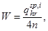
где n - допустимое число включений насосной установки в 1 ч, принимаемое для установок с открытым баком 2-4; для установок с гидропневматическим баком - 6-10. Большее число включений в 1 ч надлежит принимать для установок небольшой мощности (до 10 кВт);
б) для водонапорного бака или резервуара при производительности насосной установки менее максимального часового расхода
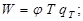
в) для бака-аккумулятора теплоты в системе горячего водоснабжения при мощности водонагревателя (генератора теплоты), не обеспечивающего максимального часового потребления теплоты,
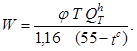
В формулах (22) и (23):
j - относительная величина регулирующего объема, определяемая в соответствии с п. 13.5.
Величины Т, QhT, qT, tc надлежит принимать в соответствии с разд. 3.
13.5. Относительную величину регулирующего объема j1,2 следует определять по формулам:
а) при непрерывной работе насосной установки (водонагревателя) с различной производительностью в течение расчетного периода (сутки, смена) наибольшего водопотребления (теплопотребления) или работе насосной установки в режиме долгосрочных включений
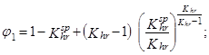
б) при равномерной и непрерывной работе насосной установки (водонагревателя или генератора теплоты) в части периода водопотребления (теплопотребления), включающей также часы наибольшего водопотребления (теплопотребления)
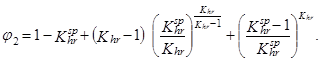
Примечания: 1. При расчете аккумуляторов
теплоты по формулам
(24) и (25) вместо значений 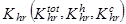 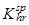 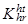
2. Значения j1 и j2 вычисленные по формулам (24) и (25), приведены в рекомендуемых приложениях 7 и 8.
13.6. Коэффициент часовой неравномерности потребления воды Khr в сутки (смену) максимального водопотребления для системы надлежит вычислять по формуле
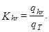
13.7.
Коэффициент часовой неравномерности подачи воды насосами 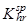
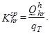
13.8.
Коэффициент часовой неравномерности теплопотребления 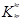
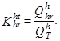
13.9.
Коэффициент часовой неравномерности подачи теплоты для нужд горячего
водоснабжения 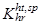
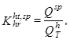
где Qsp - расчетная мощность водонагревателя, котла и тому подобного оборудования системы горячего водоснабжения, кВт.
13.10. Запас воды в баках-аккумуляторах, устраиваемых в бытовых зданиях и помещениях промышленных предприятий, следует определять в зависимости от времени их заполнения в течение смены, принимаемого при числе душевых сеток: 10-20 - 2 ч; 21-30 - 3 ч; 31 и более - 4 ч.
13.11. Неприкосновенный противопожарный запас воды при ручном, дистанционном или автоматическом включении насосов следует принимать из расчета 10-минутной продолжительности тушения пожара из внутренних пожарных Кранов при одновременном наибольшем расходе воды на производственные и хозяйственно-питьевые нужды.
При гарантированном автоматическом включении пожарных насосов неприкосновенный противопожарный запас допускается не предусматривать.
13.12. Полную вместимость емкостей V, м3, следует определять по формулам:
а) для гидропневматического бака
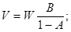
б) для водонапорного бака или резервуара
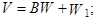
в) для аккумулятора теплоты
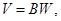
где W1 - противопожарный объем воды, м3;
А - отношение абсолютного минимального давления к максимальному, значение которого следует принимать: 0,8 - для установок, работающих с подпором; 0,75 - для установок с напором до 50 м; 0,7 - для установок с напором свыше 50 м;
В - коэффициент запаса вместимости бака, принимаемый: 1,2-1,3 - при использовании насосных установок, работающих в повторно-кратковременном режиме, 1,1 - при производительности насосных установок менее максимального часового расхода воды; для аккумуляторов теплоты В = 1.
13.13. Высота расположения водонапорного бака (в том числе бака горячей воды) и минимальное давление в гидропневматическом баке должны обеспечивать необходимый напор воды перед водоразборной арматурой, а в системах противопожарного или объединенного водопровода - необходимый напор у внутренних пожарных кранов до полного израсходования противопожарного запаса воды.
Примечание. В системах централизованного горячего водоснабжения баки-аккумуляторы предусматривать не следует, за исключением случаев, когда они необходимы для создания запаса воды (в банях, прачечных, в душевых бытовых зданий производственных предприятий и т. п.).
13.14. Водонапорные и гидропневматические баки питьевой воды, а также баки-аккумуляторы надлежит изготовлять из металла с наружной и внутренней антикоррозионной защитой; при этом для внутренней антикоррозионной защиты следует применять материалы, разрешенные Главным санитарно-эпидемиологическим управлением Минздрава СССР. Для баков-аккумуляторов систем горячего водоснабжения тепловую изоляцию следует предусматривать по расчету.
13.15. Водонапорные баки и баки-аккумуляторы (безнапорные) следует устанавливать в вентилируемом и освещаемом помещении высотой не менее 2,2 м с положительной температурой. Несущие конструкции помещения надлежит выполнять из несгораемых материалов. Под баками следует предусматривать поддоны. Расстояния между водонапорными баками и строительными конструкциями должны быть не менее 0,7 м; между баками и строительными конструкциями со стороны расположения поплавкового клапана - не менее 1 м; от верха бака до перекрытия - не менее 0,6 м; от поддона до дна бака - не менее 0,5 м.
13.16. Для водонапорных баков и баков-аккумуляторов (безнапорных) следует предусматривать:
а) трубу для подачи воды в бак с поплавковыми клапанами. Перед каждым поплавковым клапаном надлежит устанавливать запорный вентиль или задвижку;
б) отводящую трубу;
в) переливную трубу, присоединяемую на высоте наивысшего допустимого уровня воды в баке;
г) спускную трубу, присоединяемую к днищу бака и к переливной трубе с вентилем или задвижкой на присоединяемом участке трубопровода;
д) водоотводную трубу для отвода воды из поддона;
е) устройства, обеспечивающие циркуляцию холодной воды в баках, предназначенных для хранения воды питьевого качества;
ж) циркуляционную трубу для поддержания при необходимости постоянной температуры в баке-аккумуляторе во время перерывов при разборе горячей воды; на циркуляционной трубе следует предусматривать установку обратного клапана с вентилем или задвижкой;
з) воздушную трубу (диаметром 25 мм), соединяющую бак с атмосферой;
и) датчики уровня воды в баках для включения и выключения насосных установок;
к) указатели уровня воды в баках и устройства для передачи их показаний на пульт управления.
Примечания: 1. Подающие и отводящие трубы могут быть объединены в одну, в этом случае на ответвлении подающей трубы к днищу бака следует предусматривать обратный клапан и задвижку или вентиль.
2. При отсутствии сигнализации уровня воды в водонапорном баке необходимо предусматривать сигнальную трубку диаметром 15 мм, присоединяемую к баку на 5 см ниже переливной трубы, с выводом ее в раковину дежурного помещения насосной установки.
13.17. Гидропневматические баки должны быть оборудованы подающей, отводящей и спускной трубами, а также предохранительными клапанами, манометром, датчиками уровня и устройствами для пополнения и регулирования запаса воздуха.
13.18. Гидропневматические баки надлежит устанавливать в помещениях, где расстояние от верха баков до перекрытия и между баками и до стен - не менее 0,6 м.
13.19. Резервуары для сбора воды в системах оборотного водоснабжения и в системах с повторным использованием воды допускается размещать внутри и вне зданий. Резервуары следует проектировать в соответствии со СНиП 2.04.02-84*.
Вместимость резервуара необходимо определять по графикам притока воды и работы насосов.
При известных неравномерностях притока и подачи воды насосами регулирующий объем резервуара допускается вычислять согласно п. 13.4.
ПРОСАДОЧНЫЕ ГРУНТЫ
14.1. Трубопроводы водопровода внутри здания, как правило, следует размещать выше уровня пола первого или подвального этажей открытой прокладкой, доступной для осмотра и ремонта.
14.2. Прокладку вводов водопровода и трубопроводов под полом внутри здания при грунтовых условиях типа II следует предусматривать в водонепроницаемых каналах с уклоном в сторону контрольных колодцев. Длину водонепроницаемых каналов на вводах в здания от наружного обреза фундамента здания до контрольного колодца необходимо принимать в зависимости от толщины слоя просадочных грунтов и диаметров трубопроводов по табл. 5.
Таблица 5
|
Длина канала, м, при диаметре труб, мм |
|||
|
до 100 |
св. 100 до 300 |
св. 300 |
|
|
До 5 |
Принимается как для непросадочных грунтов |
||
|
Св. 5 до 12 |
5 |
7,5 |
10 |
|
Св. 12 |
7,5 |
10 |
15 |
14.3. Устройство вводов и водопроводов при возведении зданий в грунтовых условиях типа I, а также в грунтовых условиях типа II с полным устранением просадочных свойств грунтов по всей площади здания следует проектировать как для непросадочных грунтов.
14.4. Прокладка водопроводных вводов ниже подошвы фундаментов не допускается.
14.5. В местах прохождения вводов водопровода фундаменты следует заглублять не менее чем на 0,5 м ниже лотка трубопровода.
14.6. Для контроля за утечкой воды из трубопроводов, проложенных в каналах, следует предусматривать устройство контрольных колодцев диаметром 1 м. Расстояние от дна канала до дна колодца следует принимать не менее 0,7 м. Стенки колодца на высоту 1,5 м и его днище должны иметь гидроизоляцию. При устройстве колодцев в грунтовых условиях типа II основания под колодцы необходимо уплотнять на глубину 1 м.
Примечание. Контрольные колодцы следует оборудовать автоматической сигнализацией о появлении в них воды.
14.7. В местах примыкания каналов к фундаменту здания необходимо предусматривать устройства, предотвращающие возможность протекания воды из каналов в грунт, при этом следует обеспечивать свободную осадку несущих конструкций.
14.8. Вводы к внутренним сетям, укладываемым ниже уровня пола, следует присоединять в водонепроницаемых приямках.
14.9. В фундаментах или стенах подвалов для прокладки трубопроводов следует предусматривать отверстия, обеспечивающие зазор между трубой и строительными конструкциями, равные 1/3 расчетной величины просадки основания здания, но не менее 0,2 м. Зазоры в проемах следует заполнять плотным эластичным водо- и газонепроницаемым материалом.
СЕЙСМИЧЕСКИЕ РАЙОНЫ
14.10. При проектировании сетей и сооружений водоснабжения для районов с сейсмичностью 7-9 баллов следует предусматривать специальные мероприятия (устройство в допустимых местах установок аварийных насосов, электрических установок и т. п.) по обеспечению подачи воды для тушения пожаров, которые могут возникнуть при землетрясении, бесперебойную подачу питьевой воды, а также подачу воды на неотложные нужды производства.
14.11. При проектировании систем водоснабжения зданий промышленных предприятий, размещаемых в районах с сейсмичностью 8 и 9 баллов, для которых прекращение подачи воды может вызвать аварии или значительные материальные убытки, следует предусматривать два ввода с использованием двух независимых источников водоснабжения.
14.12. Жесткая заделка труб кладке стен и фундаментов зданий и сооружений не допускается. Отверстия для пропусков труб через стены и фундаменты должны иметь размеры, обеспечивающие в кладке зазор вокруг трубы не менее 0,2 м. Зазор следует заполнять эластичным несгораемым материалом. Пропуск труб через стены емкостных сооружений следует осуществлять с применением сальников, закладываемых в стены.
14.13. Укладку труб под фундаменты зданий следует предусматривать в футлярах из стальных или железобетонных труб, при этом расстояние между верхом футляра и подошвой фундамента должно быть не менее 20 см.
14.14. Внутри зданий в местах пересечения деформационных швов на трубопроводах следует предусматривать установку компенсаторов.
14.15. На вводах перед измерительными устройствами, а также в местах присоединения трубопроводов к насосам и бакам необходимо предусматривать гибкие соединения, допускающие угловые и продольные перемещения концов трубопроводов.
14.16. Вводы водопровода, внутренние водопроводные сети, трубопроводы насосных установок, установок очистки и подготовки воды, а также вертикальные трубопроводы (стояки) водонапорных баков следует выполнять из стальных труб или полиэтиленовых труб тяжелого типа.
Применять для этих целей чугунные, асбестоцементные, стеклянные, а также полиэтиленовые трубы легкого и среднего типа не допускается.
14.17. При выполнении сварочных работ по осуществлению стыков соединений стальных труб следует обеспечивать равнопрочность сварного соединения с телом трубы. Не допускается применять ручную газовую сварку. Сварные соединения трубопроводов, прокладываемых в районах с сейсмичностью 9 баллов, следует усиливать накладными муфтами на сварке.
14.18. Пожарные гидранты, а также колодцы с задвижками на трубопроводах следует располагать так, чтобы вероятность их завала в случае обрушения окружающих зданий и сооружений была наименьшей. Для этого рекомендуется пожарные гидранты и колодцы с задвижками располагать со стороны торцов зданий.
ПОДРАБАТЫВАЕМЫЕ ТЕРРИТОРИИ
14.19. При проектировании систем внутреннего водопровода холодной и горячей воды в зданиях, строящихся в условиях подрабатываемых территорий, следует предусматривать мероприятия по защите от воздействия деформаций грунта земной поверхности и элементов самих зданий в соответствии со СНиП 2.01.09-85.
14.20. Ожидаемые величины сдвигов и деформаций земной поверхности для назначения мероприятий по защите трубопроводов необходимо принимать по данным горно-геологического обоснования для проектируемого здания.
Величины перемещений отдельных отсеков здания и его элементов принимаются по данным расчетов геологов.
14.21. Для уменьшения усилий в трубопроводах, вызванных перемещениями конструкций зданий вследствие подработки, следует увеличивать податливость трубопроводов за счет применения компенсирующих устройств, рационального размещения и выбора типа узлов крепления и пропуска труб на вводе.
14.22. Для вводов в здания следует применять все виды труб с учетом назначения водопровода, требуемой прочности труб, компенсационной способности стыков, а также результатов технико-экономических расчетов.
14.23. Стыковые соединения секционных трубопроводов должны быть податливыми за счет применения уплотнительных упругих колец или герметиков.
14.24. На вводах водопровода холодной воды в здания, строящиеся на подрабатываемых территориях групп I и II, следует предусматривать компенсационные устройства. На вводах в здания, строящиеся на подрабатываемых территориях групп III и IV, установку компенсационных устройств следует предусматривать при длине ввода свыше 20 м.
На территории строящегося здания, где в результате подработок ожидается образование уступов, прокладку подземных вводов следует осуществлять в каналах, при этом зазор между верхом трубы и перекрытием канала должен быть не менее расчетной высоты уступа.
14.25. Для трубопроводов внутреннего водопровода здания или его отдельных секций, защищаемого от воздействия подработок по жесткой конструктивной схеме, дополнительной защиты не требуется.
В зданиях, защищаемых по податливой конструктивной схеме, крепление трубопроводов к элементам зданий должно обеспечивать осевые и поперечные (горизонтальные, вертикальные) перемещения трубопровода.
В таких зданиях скрытая прокладка трубопроводов не допускается.
14.26. В зданиях, защищаемых путем выравнивания домкратами или другими устройствами, должны быть предусмотрены мероприятия, обеспечивающие нормальную эксплуатацию трубопроводов.
В таких зданиях в качестве мер защиты в местах подключения стояков к магистрали и крепления разводящих трубопроводов к элементам здания, расположенных над швом скольжения, следует предусматривать компенсаторы, обеспечивающие горизонтальные и вертикальные перемещения трубопроводов. Величина перемещений определяется расчетной податливостью зданий и температурными удлинениями трубопровода.
14.27. Вводы в здания, состоящие из нескольких отсеков, следует предусматривать самостоятельными на каждый отсек. Допускается устройство одного ввода в один из отсеков при установке компенсаторов в местах пересечения трубопроводами деформационных швов.
Вариант устройства вводов определяется технико-экономическими показателями.
14.28. При прокладке транзитных внутриквартальных сетей водоснабжения по техническим подпольям или подвалам зданий следует предусматривать мероприятия, исключающие силовое взаимодействие трубопроводов с конструкциями зданий.
Компенсаторы на таких трубопроводах необходимо располагать в местах пересечения деформационных швов и на ответвлениях от транзитного трубопровода к стоякам внутренней сети. Не допускается пересечение трубопроводами деформационных швов в пределах этажей зданий.
14.29. Внутри подполья или подвала зданий трубопроводы допускается прокладывать на самостоятельных опорах и кронштейнах, прикрепляемых к стенам. Крепление трубопроводов к опорам должно допускать осевые и вертикальные перемещения труб.
14.30. При проектировании зданий в зонах, где возможно выделение рудничного газа на поверхность земли, следует предусмотреть защиту вводов водопровода от проникания по ним газа в подвалы и подполья этих зданий.
14.31. При установке гибких компенсаторов их компенсирующая способность должна определяться исходя из расчетных величин перемещений смежных отсеков здания и температурных удлинений трубопроводов.
14.32. Укладку труб под фундаментами зданий следует предусматривать в футлярах из стальных труб. Расчет на прочность футляров необходимо выполнять с учетом нагрузок от воздействия деформаций оснований.
14.33. Жесткая заделка трубопровода в кладке стен и фундаментах зданий не допускается.
Отверстия для пропуска труб через стены и фундаменты должны обеспечивать зазор между трубой и строительными конструкциями, равный расчетной величине деформаций основания здания. Зазоры в проемах фундаментов следует заполнять плотным эластичным водо- и газонепроницаемым материалом.
14.34. В местах примыкания каналов к фундаменту здания должны предусматриваться устройства, предотвращающие возможность проникания воды из каналов в грунт. При этом необходимо обеспечивать свободную осадку несущих конструкций.
ВЕЧНОМЕРЗЛЫЕ ГРУНТЫ
14.35. При проектировании вводов в здание необходимо учитывать возможность изменения мерзлотно-грунтовых условий и температурного режима вечномерзлых грунтов, которые могут произойти в результате строительства и эксплуатации запроектированных сооружений, а также предусматривать исключение теплового воздействия на грунты оснований соседних зданий и сооружений, которое может привести к недопустимым деформациям зданий и сооружений в нормальных эксплуатационных и аварийных режимах работы трубопроводов.
14.36. При прокладке трубопроводов следует принимать меры, обеспечивающие исключение или ограничение механического воздействия вечномерзлых грунтов (просадку, пучения, термокарстовых провалов, солифлюкции, морозобойных трещин и т. д.) на конструкции трубопроводов.
14.37. Прокладку вводов следует предусматривать надземной или в вентилируемых каналах, совмещая с прокладкой различных инженерных сетей. Следует максимально применять прокладку трубопроводов в подпольях зданий.
14.38. Наземную прокладку вводов следует предусматривать во всех случаях, когда требуется исключить тепловое воздействие трубопроводов на грунты оснований, учитывая ее относительно низкую стоимость и удобство в эксплуатации.
14.39. Наземную прокладку трубопроводов следует предусматривать:
а) на мачтах, эстакадах и по конструкциям зданий и сооружений. Специальные устройства для обслуживания трубопроводов (лестницы, площадки, мостики и т. д.) следует проектировать с учетом эксплуатации трубопроводов в условиях низких температур, сильных зимних ветров и полярной ночи;
б) в проветриваемых подпольях зданий высотой не менее 1,2 м, предусматривая водоотводящие лотки.
14.40. Подземную прокладку трубопроводов следует производить только в случаях, когда наземная и надземная прокладка недопустима. Подземную прокладку трубопроводов следует производить только в каналах или тоннелях.
Устойчивость трубопроводов, прокладываемых в просадочных вечномерзлых грунтах, следует обеспечивать сохранением грунтов оснований в мерзлом состоянии или заменой просадочных грунтов в основаниях в зоне возможного протаивания на непросадочные, а также поддержанием расчетного теплового режима трубопроводов.
14.41. Прокладку трубопроводов в районах с промерзанием свыше 3-4 м, а также в особо тяжелых грунтовых условиях (водонасыщенные и скальные грунты) допускается производить в зоне сезонного промерзания грунтов при условии выполнения требований, изложенных в пп. 14.32-14.34.
14.42. Прокладку трубопроводов в подземных каналах следует применять, как правило, при совместном размещении инженерных сетей различного назначения, при этом дно каналов следует выполнять лотком, обеспечивающим удаление воды при мини шальном тепловом воздействии на грунты оснований.
Установка на дне каналов под трубопроводом опор, препятствующих свободному стоку воды и удалению льда, не допускается.
14.43. Подземные каналы и тоннели надлежит предусматривать только в непросадочных грунтах или на коротких участках трасс - переходах через дороги, вводах в здания и др. Высоту каналов, обеспечивающую надежность водоотлива и вентиляции, следует увеличивать на 20-30 % по сравнению с принимаемой для обычных условий.
14.44. Подземные каналы и тоннели необходимо оборудовать системой естественной вентиляции, обеспечивающей отрицательные значения среднегодовых температур воздуха внутри каналов и тоннелей.
Узлы управления системами инженерного оборудования зданий следует размещать в первых этажах, предусматривая устройство дополнительной местной тепло- и гидроизоляции цокольных перекрытий и трапов для стока воды в канализацию.
В местах перехода трубопроводов через конструкции зданий, а также в местах примыкания каналов и тоннелей к фундаментам и стенам зданий, рассчитываемых на возможную разность вертикальных перемещений трубопроводов, каналов, тоннелей и зданий, необходимо предусматривать устройство мягких сопряжений.
14.45. Установка на трубопроводах запорной и регулирующей арматуры, сальниковых компенсаторов, спускных и воздушных кранов в пределах проветриваемых подполий зданий не допускается.
Следует минимально ограничивать число отводов и соединений труб, в частности сварных отводов и других фасонных частей.
14.46. При проектировании строительной части колодцев водопровода и канализации следует предусматривать соблюдение мер против морозного пучения грунта.
14.47. При всех способах прокладки трубопроводов следует предусмотреть следующие мероприятия по предохранению жидкостей от замерзания при нормальной эксплуатации в период нарушения расчетного теплового и гидравлического режима трубопроводов:
применение схем трубопроводов, обеспечивающих непрерывное движение жидкостей в трубах с максимально допустимой скоростью;
тепловую изоляцию трубопроводов;
подогрев трубопроводов;
применение специальной арматуры, устойчивой против замерзания, и средств автоматической защиты.
14.48. Непрерывность движения водопроводной воды следует обеспечивать:
применением циркуляционных схем водоснабжения;
применением тупиковых схем подачи воды с сухими резервирующими перемычками;
использованием автоматических выпусков, сбрасывающих водопроводную воду в канализацию, при прекращении или опасном понижении температуры воды на отдельных участках.
14.49. При прокладке трубопроводов в каналах следует применять термоизоляцию с использованием синтетических материалов на базе стекловолокна и пенопластов, а также пенобетонов.
Применять минераловатные термоизоляционные материалы не допускается.
Для защитного слоя кольцевой теплоизоляции следует применять асбестоцементную штукатурку по проволочной сетке и многослойное покрытие из рулонных материалов.
Применять толь, мешковину и другие ткани с масляной окраской не допускается.
14.50. Подогрев трубопроводов необходимо предусматривать на участках, где наиболее вероятно замерзание воды вследствие снижения скорости и понижения температуры в нормальных и аварийных режимах.
Для подогрева трубопроводов следует применять совместную прокладку труб в общей теплоизоляции с трубопроводами тепловых сетей или греющий электрокабель, укладываемый непосредственно на поверхность труб. Витковое расположение кабеля допускается только на вводах и в местах установки водопроводной арматуры. Система подогрева труб обеспечивается электроэнергией от местной сети и снабжается системой автоматического управления.
14.51. Диаметры труб на вводах водопровода в здание независимо от расчета следует принимать не менее 50 мм.
На вводах водопровода следует устанавливать незамерзающую арматуру, спускные и воздушные краны из бронзы и применять гнутые компенсаторы и отводы.
14.52. Для опорожнения труб следует проектировать трубопроводы с уклоном не менее 0,002.
15.1. В зависимости от назначения здания и предъявляемых требований к сбору сточных вод необходимо проектировать следующие системы внутренней канализации:
бытовую - для отведения сточных вод от санитарно-технических приборов (унитазов, умывальников, ванн, душей и др.);
производственную - для отведения производственных сточных вод;
объединенную - для отведения бытовых и производственных сточных вод при условии возможности их совместного транспортирования и очистки;
внутренние водостоки - для отведения дождевых и талых вод с кровли здания.
В производственных зданиях допускается проектировать несколько систем канализации, предназначенных для отвода сточных вод, отличающихся по составу, агрессивности, температуре и другим показателям, с учетом которых смешение их недопустимо или нецелесообразно.
15.2. Раздельные сети производственной и бытовой канализации следует проектировать:
для производственных зданий, производственные сточные воды которых требуют очистки или обработки;
для зданий бань и прачечных при устройстве теплоуловителей или при наличии местных очистных сооружений;
для зданий магазинов, предприятий общественного питания и предприятий по переработке пищевой продукции.
15.3. Производственные сточные воды, подлежащие совместному отведению и очистке с бытовыми водами, не удовлетворяющие требованиям СНиП 2.04.03-85, следует подвергать предварительной обработке и очистке.
16.1. Санитарно-технические приборы и приемники производственных сточных вод, в конструкции которых нет гидравлических затворов, при присоединении к бытовой или производственной канализации следует оборудовать гидравлическими затворами (сифонами), располагаемыми на выпусках под приборами или приемниками.
Примечания: 1. Для группы умывальников (не более б шт.), устанавливаемых в одном помещении, или для мойки с несколькими отделениями допускается устанавливать один общий сифон с ревизией диаметром 50 мм.
От группы душевых поддонов допускается устанавливать общий сифон с ревизией.
Для каждой производственной мойки (моечной ванны) следует предусматривать отдельный сифон диаметром 50 мм для каждого отделения.
Не допускается присоединять два умывальника, расположенных с двух сторон общей стены разных помещений к одному сифону.
2. Допускается не предусматривать гидравлические затворы для приемников производственных стоков, не загрязненных в процессе производства или загрязненных механическими примесями (окалиной, шламом) при выпуске их в самостоятельную канализационную сеть.
16.2. Тип и число специальных приемников производственных сточных вод определяются технологической частью проекта.
16.3. Все унитазы должны быть оборудованы индивидуальными смывными бачками или смывными кранами.
Примечание. Унитазы, устанавливаемые в уборных школ, больниц и поликлиник, рекомендуется оборудовать педальным пуском смывных устройств.
16.4. В мужском отделении уборных следует предусматривать установку индивидуальных настенных или напольных писсуаров. В уборных вокзалов, стадионов, зданий с большим скоплением людей, рынков, зрелищных предприятий, торговых центров и т. д. допускается применять лотковые писсуары.
16.5. В промышленных и общественных зданиях уборные с числом унитазов свыше трех следует оборудовать напольными унитазами или напольными чашами.
Установка унитазов с сидениями в указанных зданиях рекомендуется только по согласованию с местными органами санитарно-эпидемиологической службы.
В детских садах, а также в общеобразовательных школах и школах-интернатах для учащихся младших классов следует уборные оборудовать детскими унитазами.
16.6. В помещениях личной гигиены женщин производственных и общественных зданий надлежит предусматривать установку гигиенических душей, в жилых зданиях - биде.
16.7. В душевых, располагаемых на междуэтажных перекрытиях, а также в бытовых помещениях промышленных предприятий и спортивных сооружений, рекомендуется устанавливать душевые поддоны.
16.8. Трапы следует устанавливать:
диаметром 50 мм - в душевых на 1-2 душа, диаметром 100 мм - на 3-4 душа;
диаметром 50 мм - в полу санузлов при номерах гостиниц, санаториев, кемпингов, турбаз, в уборных с тремя унитазами и более;
в умывальных - с пятью умывальниками и более;
диаметром 100 мм - в мусорокамерах жилых зданий;
в производственных помещениях - при необходимости мокрой уборки полов или для производственных целей;
в уборных с числом писсуаров более трех;
в помещениях личной гигиены женщин.
Примечания: 1. В лотке душевого помещения допускается устанавливать один трап не более чем на 8 душей.
2. В ванных комнатах жилых зданий и пансионатов трапы не устанавливаются.
16.9. Уклон пола в душевых помещениях следует принимать 0,01-0,02 в сторону лотка или трапа. Лоток должен иметь ширину не менее 200 мм, начальную глубину 30 мм и уклон 0,01 в сторону трапа.
16.10. Высоту, на которой устанавливаются санитарные приборы, следует принимать в соответствии со СНиП 3.05.01-85.
16.11. Раковины самопомощи, аварийные души и другие устройства самопомощи следует устанавливать в соответствии с указаниями по строительному проектированию предприятий, зданий и сооружений различных отраслей промышленности.
17.1. Отвод сточных вод следует предусматривать по закрытым самотечным трубопроводам.
Примечание. Производственные сточные воды, не имеющие неприятного запаха и не выделяющие вредные газы и пары, если это вызывается технологической необходимостью, допускается отводить по открытым самотечным лоткам с устройством общего гидравлического затвора.
17.2. Участки канализационной сети следует прокладывать прямолинейно. Изменять направление прокладки канализационного трубопровода и присоединять приборы следует с помощью соединительных деталей.
Примечание. Изменять уклон прокладки на участке отводного (горизонтального) трубопровода не допускается
17.3. Устройство отступов на канализационных стояках не допускается, если ниже отступов присоединены санитарные приборы.
17.4. Для присоединения к стояку отводных трубопроводов, располагаемых под потолком помещений, в подвалах и технических подпольях, следует предусматривать косые крестовины и тройники.
17.5. Двустороннее присоединение отводных труб от ванн к одному стояку на одной отметке допускается только с применением косых крестовин. Присоединять санитарные приборы, расположенные в разных квартирах на одном этаже, к одному отводному трубопроводу не допускается.
17.6. Применять прямые крестовины при расположении их в горизонтальной плоскости не допускается.
17.7. Для систем канализации с учетом требований прочности, коррозионной стойкости, экономии расходуемых материалов необходимо предусматривать следующие трубы:
для самотечных систем - чугунные, асбестоцементные, бетонные, железобетонные, пластмассовые, стеклянные;
для напорных систем - напорные чугунные, железобетонные, пластмассовые, асбестоцементные.
17.8. Соединительные детали трубопроводов следует принимать согласно действующим государственным стандартам и техническим условиям.
17.9. Прокладку внутренних канализационных сетей надлежит предусматривать:
открыто - в подпольях, подвалах, цехах, подсобных и вспомогательных помещениях, коридорах, технических этажах и в специальных помещениях, предназначенных для размещения сетей, с креплением к конструкциям зданий (стенам, колоннам, потолкам, фермам и др.), а также на специальных опорах;
скрыто - с заделкой в строительные конструкции перекрытий, под полом (в земле, каналах), панелях, бороздах стен, под облицовкой колонн (в приставных коробах у стен), в подшивных потолках, в санитарно-технических кабинах, в вертикальных шахтах, под плинтусом в полу.
Допускается прокладка канализации из пластмассовых труб в земле, под полом здания, с учетом возможных нагрузок.
В многоэтажных зданиях различного назначения при применении пластмассовых труб для систем внутренней канализации и водостоков необходимо соблюдать следующие условия:
а) прокладку канализационных и водосточных стояков предусматривать скрыто в монтажных коммуникационных шахтах, штрабах, каналах и коробах, ограждающие конструкции которых, за исключением лицевой панели, обеспечивающей доступ в шахту, короб и т. п., должны быть выполнены из несгораемых материалов;
б) лицевую панель изготовлять в виде открывающейся двери из сгораемого материала при применении труб из поливинилхлорида и трудносгораемого материала - при применении труб из полиэтилена.
Примечание. Допускается применять сгораемый материал для лицевой панели при полиэтиленовых трубах, но при этом дверь должна быть неоткрывающейся. Для доступа к арматуре и ревизиям в этом случае необходимо предусматривать устройство открывающихся люков площадью не более 0,1 м2 с крышками;
в) в подвалах зданий при отсутствии в них производственных складских и служебных помещений, а также на чердаках и в санузлах жилых зданий прокладку канализационных и водосточных пластмассовых трубопроводов допускается предусматривать открыто;
г) места прохода стояков через перекрытия должны быть заделаны цементным раствором на всю толщину перекрытия;
д) участок стояка выше перекрытия на 8-10 см (до горизонтального отводного трубопровода) следует защищать цементным раствором толщиной 2-3 см;
е) перед заделкой стояка раствором трубы следует обертывать рулонным гидроизоляционным материалом без зазора.
17.10. Прокладка внутренних канализационных сетей не допускается:
под потолком, в стенах и в полу жилых комнат, спальных помещений детских учреждений, больничных палат, лечебных кабинетов, обеденных залов, рабочих комнат, административных зданий, залов заседаний, зрительных залов, библиотек, учебных аудиторий, электрощитовых и трансформаторных, пультов управления автоматики, приточных вентиляционных камер и производственных помещений, требующих особого санитарного режима;
под потолком (открыто или скрыто) кухонь, помещений предприятий общественного питания, торговых залов, складов пищевых продуктов и ценных товаров, вестибюлей, помещений, имеющих ценное художественное оформление, производственных помещений в местах установки производственных печей, на которые не допускается попадание влаги, помещений, в которых производятся ценные товары и материалы, качество которых снижается от попадания на них влаги.
Примечание. В помещениях приточных вентиляционных камер допускается пропуск водосточных стояков при размещении их вне зоны воздухозабора.
17.11. К канализационной сети следует предусматривать присоединение с разрывом струи не менее 20 мм от верха приемной воронки:
технологического оборудования для приготовления и переработки пищевой продукции;
оборудования и санитарно-технических приборов для мойки посуды, устанавливаемых в общественных и производственных зданиях;
спускных трубопроводов бассейнов.
17.12. Стояки бытовой канализации, размещаемые в верхних этажах зданий, проходящие через предприятия общественного питания, следует предусматривать в оштукатуренных коробах без установки ревизий.
17.13. Прокладку трубопроводов производственных сточных вод в производственных и складских помещениях предприятий общественного питания, в помещениях для приема, хранения и подготовки товаров к продаже и в подсобных помещениях магазинов допускается размещать в коробах без установки ревизий.
От сетей производственной и бытовой канализации магазинов и предприятий общественного питания допускается присоединение двух раздельных выпусков в один колодец наружной канализационной сети.
17.14. Против ревизий на стояках при скрытой прокладке следует предусматривать люки размерами не менее 30´40 см.
17.15. Прокладку отводных трубопроводов от приборов, устанавливаемых в уборных административных и жилых зданий, раковин и моек в кухнях, умывальников в лечебных кабинетах, больничных палатах и других подсобных помещениях следует предусматривать над полом; при этом необходимо предусматривать устройство облицовки и гидроизоляции.
17.16. Прокладку под полом трубопроводов, транспортирующих агрессивные и токсичные сточные воды, следует предусматривать в каналах, выведенных до уровня пола и перекрытых съемными плитами или, при соответствующем обосновании, в проходных тоннелях.
17.17. Для взрывопожароопасных цехов следует предусматривать отдельную производственную канализацию с самостоятельными выпусками, вентиляционными стояками и гидрозатворами на каждом из них с учетом требований правил техники безопасности, приведенными в ведомственных нормах.
Вентиляцию сети необходимо предусматривать через вентиляционные стояки, присоединяемые к высшим точкам трубопроводов.
Присоединять производственную канализацию, транспортирующую сточные воды, содержащие горючие и легковоспламеняющиеся жидкости, к сети бытовой канализации и водостокам не допускается.
17.18. Сети бытовой и производственной канализации, отводящие сточные воды в наружную канализационную сеть, должны вентилироваться через стояки, вытяжная часть которых выводится через кровлю или сборную вентиляционную шахту здания на высоту, м:
от плоской неэксплуатируемой кровли 0,3
« скатной кровли 0,5
« эксплуатируемой кровли 3
« обреза сборной вентиляционной шахты 0,1
Выводимые выше кровли вытяжные части канализационных стояков следует размещать от открываемых окон и балконов на расстоянии не менее 4 м (по горизонтали).
Флюгарки на вентиляционных стояках предусматривать не требуется.
17.19. Не допускается соединять вытяжную часть канализационных стояков с вентиляционными системами и дымоходами.
17.20. Диаметр вытяжной части канализационного стояка должен быть равен диаметру сточной части стояка. Допускается объединять поверху одной вытяжной частью несколько канализационных стояков. Диаметр вытяжного стояка для группы объединенных канализационных стояков, а также диаметры участков сборного вентиляционного трубопровода, объединяющего канализационные стояки, следует принимать согласно пп. 18.6 и 18.10. Сборный вентиляционный трубопровод, объединяющий вверху канализационные стояки, надлежит предусматривать с уклоном 0,01 в сторону стояков.
17.21. При расходах сточных вод по канализационному стояку свыше указанных в табл. 8 следует предусматривать устройство дополнительного вентиляционного стояка, присоединяемого к канализационному стояку через один этаж. Диаметр дополнительного вентиляционного стояка следует принимать на один размер меньше диаметра канализационного стояка.
Присоединение дополнительного вентиляционного стояка к канализационному следует предусматривать снизу ниже последнего нижнего прибора или сверху - к направленному вверх отростку косого тройника, устанавливаемого на канализационном стояке выше бортов санитарно-технических приборов или ревизий, расположенных на данном этаже.
17.22. Для наблюдения, в случае необходимости, за движением сточных вод от технологической аппаратуры на трубопроводах, отводящих сточные воды или отработавшую охлажденную воду, следует предусматривать разрыв струи или устанавливать смотровые фонари.
17.23. На сетях внутренней бытовой и производственной канализации следует предусматривать установку ревизий или прочисток:
на стояках при отсутствии на них отступов - в нижнем и верхнем этажах, а при наличии отступов - также и в вышерасположенных над отступами этажах;
в жилых зданиях высотой 5 этажей и более - не реже чем через три этажа;
в начале участков (по движению стоков) отводных труб при числе присоединяемых приборов 3 и более, под которыми нет устройств для прочистки;
на поворотах сети - при изменении направления движения стоков, если участки трубопроводов не могут быть прочищены через другие участки.
17.24. На горизонтальных участках сети канализации наибольшие допускаемые расстояния между ревизиями или прочистками надлежит принимать согласно табл. 6.
17.25. Наименьшую глубину заложения канализационных труб следует принимать из условия предохранения труб от разрушения под действием постоянных и временных нагрузок.
Канализационные трубопроводы, прокладываемые в помещениях, где по условиям эксплуатации возможно их механическое повреждение, должны быть защищены, а участки сети, эксплуатируемые при отрицательных температурах, - утеплены.
В бытовых помещениях допускается предусматривать прокладку труб на глубине 0,1 м от поверхности пола до верха трубы.
17.26. На сетях производственной канализации, отводящих сточные воды, не имеющие запаха и не выделяющие вредных газов и паров, допускается устройство смотровых колодцев внутри производственных зданий.
Смотровые колодцы на сети внутренней производственной канализации диаметром 100 мм и более следует предусматривать на поворотах трубопроводов, в местах изменения уклонов или диаметров труб, в местах присоединения ответвлений, а также на длинных прямолинейных участках трубопроводов на расстояниях, приведенных в СНиП 2.04.03-85.
На сетях бытовой канализации устройство смотровых колодцев внутри зданий не допускается.
На сетях производственной канализации, выделяющих запахи, вредные газы и пары, возможность устройства колодцев и конструкцию их следует предусматривать по ведомственным нормам.
17.27. Санитарные приборы, борта которых расположены ниже уровня люка ближайшего смотрового колодца, необходимо присоединять к отдельной системе канализации (изолированной от системы канализации вышерасположенных помещений) с устройством отдельного выпуска и установкой на нем задвижки с электрифицированным приводом, управляемым автоматически по сигналу датчика, устанавливаемого на трубопроводе в канализуемом подвале, и подачей аварийного сигнала в дежурное помещение или на диспетчерский пункт.
За электрифицированной задвижкой ниже по течению воды допускается подключение канализации вышерасположенных этажей, при этом устанавливать ревизии в подвале на стояке не допускается.
Выпуски от канализационной сети подвальных помещений следует предусматривать с уклоном не менее 0,02.
Канализуемые подвальные помещения должны быть отделены глухими капитальными стенами от складских помещений для хранения продуктов или ценных товаров.
Примечание. Допускается установка задвижки с ручным приводом при условии круглосуточного пребывания обслуживающего персонала в подвальном помещении.
Таблица 6
|
Расстояние, м, между ревизиями и прочистками в зависимости от вида сточных вод |
Вид прочистного устройства |
|||
|
производственные незагрязненные и водостоки |
бытовые и производственные, близкие к ним |
производственные, содержащие большое количество взвешенных веществ |
||
|
50 |
15 |
12 |
10 |
Ревизия |
|
50 |
10 |
8 |
6 |
Прочистка |
|
100 - 150 |
20 |
15 |
12 |
Ревизия |
|
100 - 150 |
15 |
10 |
8 |
Прочистка |
|
200 и более |
25 |
20 |
15 |
Ревизия |
Примечания: 1. Вместо ревизии на подвесных линиях сетей канализации, прокладываемых под потолком, следует предусматривать установку прочисток, выводимых в вышерасположенный этаж с устройством люка в полу, или открыто в зависимости от назначения помещения.
2. Ревизии и прочистки необходимо устанавливать в местах, удобных для их обслуживания.
3. На подземных трубопроводах канализации ревизии следует устанавливать в колодцах диаметрам не менее 0,7 м. Днища колодцев должны иметь уклон не менее 0,05 к фланцу ревизий.
17.28. Длина выпуска от стояка или прочистки до оси смотрового колодца должна быть не более указанной в табл. 7.
Таблица 7
|
50 |
100 |
150 и более |
|
|
Длина выпуска от стояка или прочистки до оси смотрового колодца, м |
8 |
12 |
15 |
Примечания: 1. При длине выпуска свыше длины, указанной в таблице, необходимо предусматривать устройство дополнительного смотрового колодца.
2. Длину выпуска незагрязненных сточных вод и водостоков при диаметре труб 100 мм и более допускается увеличивать до 20 м.
17.29. Диаметр выпуска следует определять расчетом. Он должен быть не менее диаметра наибольшего из стояков, присоединяемых к данному выпуску.
17.30. Выпуски следует присоединять к наружной сети под углом не менее 90° (считая по движению сточных вод). На выпуске канализации допускается устройство перепадов:
до 0,3 м - открытых - по бетонному водосливу в лотке, входящему с плавным поворотом в колодец наружной канализации;
свыше 0,3 м - закрытых - в виде стояка сечением не менее сечения подводящего трубопровода.
17.31. При пересечении выпуском стен подвала или фундаментов здания следует выполнять мероприятия, указанные в п. 9.7.
18.1. Гидравлический расчет канализационных трубопроводов диаметром до 500 мм из различных материалов следует производить по номограмме рекомендуемого приложения 9 или по таблицам, а для трубопроводов диаметром свыше 500 мм - согласно СНиП 2.04.03-85.
18.2. Расчет
канализационных трубопроводов следует производить, назначая скорость движения
жидкости V, м/с, и наполнение 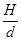
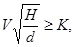
здесь К = 0,5 - для трубопроводов из пластмассовых и стеклянных труб;
К = 0,6 - для трубопроводов из других материалов.
При этом скорость движения жидкости должна быть не менее 0,7 м/с, а наполнение трубопроводов - не менее 0,3.
В тех случаях, когда выполнить условие (33) не представляется возможным из-за недостаточной величины расхода бытовых сточных вод, безрасчетные участки трубопроводов диаметром 40-50 мм следует прокладывать с уклоном 0,03, а диаметром 85 и 100 мм - с уклоном 0,02.
В системах производственной канализации скорость движения и наполнение трубопроводов определяются необходимостью транспортирования загрязнений производственных сточных вод.
18.3. Наибольший уклон трубопроводов не должен превышать 0,15 (за исключением ответвлений от приборов длиной до 1,5 м).
18.4. Размеры и уклоны лотков следует принимать из условия обеспечения самоочищающей скорости сточных вод, наполнение лотков - не более 0,8 их высоты, ширину лотков - не менее 0,2 м. Ширина лотка назначается в зависимости от результатов гидравлического расчета и конструктивных данных; при высоте лотка свыше 0,5 м ширина его должна быть не менее 0,7 м.
18.5. Диаметр канализационного стояка надлежит принимать по табл. 8 в зависимости от величины расчетного расхода сточной жидкости, наибольшего диаметра поэтажного отвода трубопровода и угла его присоединения к стояку.
Примечание. При применении пластмассовых труб в расчет принимается внутренний диаметр трубопровода.
18.6. Диаметр участков сборного вентиляционного трубопровода, объединяющего вверху канализационные стояки, надлежит принимать, мм, не менее:
при числе санитарно-
технических приборов
не более 120 100
то же, 300 125
« 1200 150
« св. 1200 200
18.7. Допускается предусматривать невентилируемые канализационные стояки в следующих зданиях и сооружениях:
в сельских одноэтажных жилых зданиях;
во всех остальных случаях, если имеется не менее одного вентилируемого стояка и расход сточной жидкости в стояках не превышает значений, указанных в табл. 9, в зависимости от диаметра и рабочей высоты стояка.
Невентилируемый канализационный стояк должен заканчиваться прочисткой, устанавливаемой в раструб прямого отростка крестовины или тройника на уровне присоединения к этому стояку наиболее высоко расположенных приборов.
18.8. Уклоны трубопроводов производственной канализации, отводящей сточные воды, содержащие в большом количестве механические взвеси (окалину, металлическую стружку, известь и др.), следует определять гидравлическим расчетом из условия обеспечения в трубах самоочищающих скоростей и наполнения не менее 0,3.
Таблица 8
|
Угол присоединения поэтажного отвода к стояку, град |
Максимальная пропускная способность вентилируемого канализационного стояка, л/с, при его диаметре, мм |
||||
|
50 |
85 |
100 |
150 |
||
|
50 |
90 |
0,8 |
2,8 |
4,3 |
11,4 |
|
60 |
1,2 |
4,3 |
6,4 |
17,0 |
|
|
45 |
1,4 |
4,9 |
7,4 |
19,6 |
|
|
85 |
90 |
- |
2,1 |
- |
- |
|
60 |
- |
3,2 |
- |
- |
|
|
45 |
- |
3,6 |
- |
- |
|
|
100 |
90 |
- |
- |
3,2 |
8,5 |
|
60 |
- |
- |
4,9 |
12,8 |
|
|
45 |
- |
- |
5,5 |
14,5 |
|
|
150 |
90 |
- |
- |
- |
7,2 |
|
60 |
- |
- |
- |
11,0 |
|
|
45 |
- |
- |
- |
12,6 |
|
Примечание. Диаметр канализационного стояка должен быть не менее наибольшего диаметра поэтажных отводов, присоединенных к этому стояку.
Таблица 9
|
Максимальная пропускная способность невентилируемого канализационного стояка, л/с, при его диаметре, мм |
||||
|
50 |
85 |
100 |
150 |
|
|
1 |
1,6 |
5,3 |
6,3 |
14,0 |
|
2 |
1,0 |
3,1 |
3,7 |
8,0 |
|
3 |
0,6 |
2,0 |
2,4 |
5,4 |
|
4 |
0,5 |
1,4 |
1,8 |
3,9 |
|
5 |
0,4 |
1,1 |
1,4 |
3,0 |
|
6 |
0,4 |
0,8 |
1,0 |
2,4 |
|
7 |
0,4 |
0,7 |
0,9 |
2,0 |
|
8 |
0,4 |
0,5 |
0,7 |
1,6 |
|
9 |
0,4 |
0,5 |
0,6 |
1,4 |
|
10 |
0,4 |
0,5 |
0,6 |
1,2 |
|
11 |
0,4 |
0,5 |
0,6 |
1,0 |
|
12 |
0,4 |
0,5 |
0,6 |
0,9 |
|
13 и более |
0,4 |
0,5 |
0,6 |
0,9 |
19.1. Производственные сточные воды, содержащие горючие жидкости, взвешенные вещества, жиры, масла, кислоты и другие вещества, нарушающие нормальную работу или вызывающие разрушения сетей и очистных сооружений, а также содержащие ценные отходы производства, следует очищать до поступления их в наружную сеть канализации, для чего в здании или около него следует предусматривать устройство местных очистных установок.
19.2. Не допускается спуск в канализацию технологических растворов, а также осадка их технологических резервуаров при их очистке.
Спуск в канализацию ядовитых продуктов и реагентов при нормальной эксплуатации и при авариях запрещается. Эти продукты следует сбрасывать в специальные технологические емкости для дальнейшей утилизации или обезвреживания.
19.3. Отработанные реактивы из лабораторий перед спуском их в канализацию следует обезвреживать средствами лабораторий, при этом значение рН сточных вод должно быть от 6,5 до 8,5.
19.4. Сточные воды инфекционных больниц и отделений перед сбросом в наружную канализационную сеть необходимо обеззараживать. Очистку производить на городских сооружениях биологической очистки или на местных очистных сооружениях (при отсутствии городских), располагаемых на территории больницы или отделения.
19.5. Внутрицеховые очистные установки следует размещать с учетом возможности их осмотра, очистки и ремонта, при этом необходимо предусматривать механизацию трудоемких процессов.
19.6. Не допускается установка внутри зданий отстойников (в том числе жироуловителей) для улавливания быстрозагнивающих примесей, а также уловителей для легковоспламеняющихся и горючих жидкостей.
19.7. В уловителях для очистки стоков от горючих жидкостей следует предусматривать на подводящих трубопроводах гидравлические затворы и вытяжную вентиляцию.
19.8. Сточные воды, поступающие в бензоуловитель, следует предварительно очищать в грязеотстойниках. Очистка грязеотстойников от шлама должна быть механизирована.
19.9. При наличии в сточных водах крупных плавающих, волокнистых и других примесей следует предусматривать установку неподвижных решеток, общих для всей системы канализации или для отдельных стоков. Решетки следует устанавливать в специальных камерах приемных резервуаров, в колодцах или непосредственно в каналах. Угол наклона решетки к горизонтальной плоскости в сторону течения сточных вод должен быть не менее 60°.
19.10. Проектирование и расчет решеток, песколовок, отстойников, маслонефтеуловителей, нейтрализационных и других установок для очистки сточных вод, а также насосных установок для перекачки бытовых и производственных стоков следует производить в соответствии со СНиП 2.04.03-85.
19.11. Вместимость резервуаров при насосных установках надлежит определять в соответствии с часовым графиком притока сточных вод и режимом работы насосов. При этом вместимость резервуаров при насосных установках, работающих автоматически, следует определять из условия включения насосов не более 6 раз в 1 ч, а при отсутствии графика - принимать равной 5-10 % максимального часового притока сточных вод.
19.12. В приемных резервуарах необходимо устанавливать указатели уровней, устройства по взмучиванию выпадающего осадка и приточно-вытяжную вентиляцию.
19.13. Насосы для перекачки сточных вод следует принимать в зависимости от состава сточных вод (фекальные, песковые, кислотостойкие и др.).
19.14. Установку насосов надлежит располагать под заливом от расчетного уровня перекачиваемых сточных вод в резервуаре. При необходимости расположения насосов выше уровня сточных вод в резервуаре высота всасывания не должна превышать величины, допускаемой для насосов данного типа, при этом должны быть предусмотрены надежно действующие устройства для залива насосов.
19.15. Насосы и приемные резервуары для производственных сточных вод, не выделяющих ядовитые и неприятные запахи, газы и пары, а также пневматические насосные установки допускается располагать в производственных и общественных зданиях.
Насосы для перекачки бытовых и производственных стоков, имеющих в своем составе токсичные и быстро загнивающие загрязнения, а также для перекачки стоков, выделяющих ядовитые и неприятные запахи, газы и пары, следует располагать в отдельно стоящем здании, подвале или изолированном помещении, а при отсутствии подвала - в отдельном отапливаемом помещении первого этажа, имеющем самостоятельный выход наружу или на лестничную клетку. Помещение насосной станции следует оборудовать приточно-вытяжной вентиляцией. Приемные резервуары для указанных стоков необходимо располагать вне зданий или в изолированных помещениях совместно с насосами.
Примечание. Выход из насосной на лестничную клетку допускается устраивать в зданиях, к которым не предъявляются повышенные требования по звукоизоляции.
19.16. Не допускается размещать канализационные насосные станции в жилых зданиях, детских учреждениях, больницах, предприятиях общественного питания, предприятиях пищевой промышленности, под рабочими помещениями административных зданий, учебных заведений, а также в зданиях и помещениях, к которым предъявляются повышенные требования в части уровня шума.
19.17. В канализационных насосных станциях следует предусматривать установку резервных насосов, число которых надлежит принимать: при числе однотипных рабочих насосов до двух - один резервный; свыше двух - два резервных.
Число резервных насосов для перекачки кислых и шламосодержащих сточных вод следует принимать:
при одном рабочем насосе - один резервный и один хранящийся на складе;
при двух рабочих насосах и более - два резервных.
Примечание. В отдельных случаях при обосновании допускается установка одного рабочего насоса и хранение запасного насоса на складе.
19.18. Насосные установки надлежит проектировать с автоматическим и ручным управлением.
19.19. Для каждого канализационного насоса следует предусматривать отдельную всасывающую линию с подъемом к насосу не менее 0,005.
19.20. На всасывающем и напорном трубопроводах каждого насоса следует устанавливать задвижки; на напорном трубопроводе, кроме того, обратный клапан.
Примечание. При транспортировании стоков, содержащих взвешенные вещества (песок, шлам), приемные и обратные клапаны не предусматриваются.
20.1. Внутренние водостоки должны обеспечивать отвод дождевых и талых вод с кровель зданий.
Примечание. При устройстве внутренних водостоков в неотапливаемых зданиях следует предусматривать мероприятия, обеспечивающие положительную температуру в трубопроводах и водосточных воронках при отрицательной температуре наружного воздуха (электрообогрев, обогрев с помощью пара и т.д.). Целесообразность устройства обогреваемых внутренних водостоков следует обосновать технико-экономическим расчетом.
20.2. Воду из систем внутренних водостоков следует отводить в наружные сети дождевой или общесплавной канализации.
Примечания: 1. При обосновании допускается предусматривать отвод воды из систем внутренних водостоков в систему производственной канализации незагрязненных или повторно используемых сточных вод.
2. Не допускается отвод воды из внутренних водостоков в бытовую канализацию и присоединение к системе внутренних водостоков санитарных приборов.
20.3. При отсутствии дождевой канализации выпуск дождевых вод из внутренних водостоков следует принимать открыто в лотки около здания (открытый выпуск); при этом следует предусматривать мероприятия, исключающие размыв поверхности земли около здания.
Примечание. При устройстве открытого выпуска на стояке внутри здания следует предусматривать гидравлический затвор с отводом талых вод в зимний период года в бытовую канализацию.
20.4. На плоской кровле здания и в одной ендове необходимо устанавливать не менее двух водосточных воронок.
Водосточные воронки на кровле следует размещать с учетом ее рельефа, допускаемой площади водосбора на одну воронку и конструкции здания.
Максимальное расстояние между водосточными воронками при любых видах кровли не должно превышать 48 м.
Примечание. На плоских кровлях жилых и общественных зданий допускается устанавливать по одной водосточной воронке на каждую секцию.
20.5. Присоединение к одному стояку воронок, расположенных на разных уровнях, допускается, в случаях, когда общий расчетный расход по стояку не превышает величин, приведенных в табл. 10.
Таблица 10
|
85 |
100 |
150 |
200 |
|
|
Расчетный расход дождевых вод на водосточный стояк, л/с |
10 |
20 |
50 |
80 |
20.6. Минимальные уклоны отводных трубопроводов следует принимать для подвесных трубопроводов 0,005, для подпольных - в соответствии с требованиями разд. 18.
20.7. Для прочистки сети внутренних водостоков следует предусматривать установку ревизий, прочисток и смотровых колодцев с учетом требований разд. 17. На стояках ревизии необходимо устанавливать в нижнем этаже зданий, а при наличии отступов - над ними.
Примечание. При длине подвесных горизонтальных линий до 24 м прочистку в начале участка допускается не предусматривать.
20.8. Присоединение водосточных воронок к стоякам следует предусматривать при помощи компенсационных раструбов с эластичной заделкой.
20.9. Расчетный расход дождевых вод Q, л/с, с водосборной площади следует определять по формулам:
для кровель с уклоном до 1,5 включ.
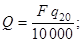
для кровель с уклоном свыше 1,5 %
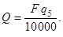
В формулах (34) и (35):
F - водосборная площадь, м2;
q20 - интенсивность дождя, л/с с 1 га (для данной местности), продолжительностью 20 мин при периоде однократного превышения расчетной интенсивности, равной 1 году (принимаемая согласно СНиП 2.04.03-85);
q5 - интенсивность дождя, л/с с 1 га (для данной местности), продолжительностью 5 мин при периоде однократного превышения расчетной интенсивности, равной 1 году, определяемая по формуле
(36)
здесь n - параметр, принимаемый согласно СНиП 2.04.03-85.
20.10. Расчетный расход дождевых вод, приходящийся на водосточный стояк, не должен превышать величин, приведенных в табл. 10, а на водосточную воронку определяется по паспортным данным принятого типа воронки.
20.11. При определении расчетной водосборной площади следует дополнительно учитывать 30 % суммарной площади вертикальных стен, примыкающих к кровле и возвышающихся над ней.
20.12. Водосточные стояки, а также все отводные трубопроводы, в том числе прокладываемые ниже пола первого этажа, следует рассчитывать на давление, выдерживающее гидростатический напор при засорах и переполнениях.
20.13. Для внутренних водостоков надлежит применять пластмассовые, асбестоцементные и чугунные трубы с учетом требований пп. 17.7, 17.9.
На горизонтальных подвесных линиях при наличии вибрационных нагрузок допускается применять стальные трубы.
21.1. Материал труб для канализационных трубопроводов, прокладываемых в особых природных и климатических условиях, следует принимать согласно СНиП 2.04.03-85.
ПРОСАДОЧНЫЕ ГРУНТЫ
21.2. Прокладку напорных и самотечных трубопроводов внутри здания и выпусков канализации надлежит предусматривать согласно требованиям к внутреннему водопроводу, приведенным в разд. 14.
21.3. Стыковые соединения труб следует выполнять на резиновых уплотнительных кольцах.
21.4. Внутренние водостоки следует проектировать подвесными. Когда по требованиям технологии производства устройств подвесных водостоков невозможно, допускается принимать прокладку трубопроводов водосточных сетей согласно требованиям разд. 14.
21.5. При наличии в районе строительства наружной дождевой канализации выпуски водосточных систем надлежит проектировать согласно требованиям к выпускам канализации.
21.6. Не допускается прокладывать в одном канале выпуски водостока с другими системами канализации, кроме системы, отводящей незагрязненные сточные воды.
21.7. При отсутствии в районе строительства дождевой или общесплавной канализации допускается предусматривать выпуск воды из внутренних водостоков в открытые водонепроницаемые лотки.
Под лотками следует предусматривать уплотнение грунта на глубину 0,2-0,3 м.
Лотки в местах переходов под тротуарами и проезжей частью автомобильных дорог следует перекрывать железобетонными плитами.
СЕЙСМИЧЕСКИЕ РАЙОНЫ
21.8. Жесткая заделка трубопровода в кладке стен и фундаментах зданий и сооружений не допускается. Отверстия для пропуска труб через стены и фундаменты должны иметь размеры, обеспечивающие в кладке зазор трубы не менее 0,2 м. Зазор должен заполняться эластичным водо- и газонепроницаемым материалом.
21.9. Не допускается пересечение канализационными трубопроводами конструкций деформационных швов зданий.
21.10. Стыковые соединения раструбных труб и труб, соединяемых на муфтах, прокладываемых в районах с сейсмичностью 8-9 баллов, должны обеспечивать компенсацию возможных просадок, для чего следует применить резиновые уплотнительные кольца.
21.11. В местах поворота стояка из вертикального в горизонтальное положение следует предусматривать бетонные упоры.
ПОДРАБАТЫВАЕМЫЕ ТЕРРИТОРИИ
21.12. При проектировании внутренних сетей канализации водостоков зданий на подрабатываемых территориях следует соблюдать требования пп. 14.19-14.24; 14.30 и 14.32.
21.13. Выпуски канализации и водостоков из зданий и сооружений, возводимых на подрабатываемых территориях I-IV групп, допускается выполнять из чугунных, керамических, асбестоцементных или пластмассовых труб.
На территориях, подрабатываемых крутопадающими пластами Iк-IVк групп, выпуски следует выполнять из чугунных, асбестоцементных или пластмассовых труб.
21.14. Уклоны выпусков и труб внутренней канализационной сети зданий следует назначать с учетом ожидаемой осадки земной поверхности.
21.15. Стыковые соединения трубопроводов внутренней канализации следует выполнять подвижными за счет применения эластичных заделок. В зданиях, защищаемых по жесткой конструктивной схеме, допускается предусматривать жесткую заделку стыковых соединений.
21.16. Не допускается пересечение трубопроводами внутренней канализации деформационных швов зданий.
21.17. Не допускается скрытая прокладка труб внутренней канализации в бороздах и штробах стен здания, защищаемого по податливой конструктивной схеме.
21.18. Для внутренней канализации зданий следует применять канализационные трубы и соединительные части из полиэтилена и других синтетических материалов.
21.19. При защите здания в процессе его эксплуатации методом выравнивания трубопроводы канализации, прокладываемые в подвалах или подпольях, не должны затруднять выполнение работ по выравниванию здания.
ВЕЧНОМЕРЗЛЫЕ ГРУНТЫ
21.20. Внутренние водостоки следует проектировать с открытым выпуском.
21.21. Транспортируемую жидкость следует предохранять от замерзания при расчетных эксплуатационных и аварийных режимах.
Подогрев канализационных стоков в случае необходимости следует обеспечивать дополнительным сбросом водопроводной воды.
Примечание. Сброс водопроводной воды в канализацию у потребителей, в концах тупиковых участков и на перемычках, не обеспечивающих надежной циркуляции, допускается только на основании результатов технико-экономических расчетов, подтверждающих целесообразность упрощения сетей за счет резко увеличенного расхода воды.
21.22. Системы водоснабжения и канализации следует оснащать комплектом приборов и установок, обеспечивающих систематический контроль и по возможности автоматическое регулирование температурного режима трубопроводов, гидравлического режима трубопроводов, температурного режима грунтов в основаниях трубопроводов и сооружений.
21.23. Число вод водопровода и выпусков канализации необходимо принимать минимальным и соблюдать при этом следующие условия:
уклоны труб и каналов необходимо направлять от здания;
воздух, вентилирующий каналы, должен забираться из проветриваемых подполий зданий;
в местах непосредственного примыкания каналов свайные фундаменты зданий следует заглублять на 2-3 м ниже расчетной величины.
21.24. На выпусках канализаций, при проектировании которых не предусматривается тепловое сопровождение, наряду с термоизоляцией следует предусматривать дополнительный изоляционный слой из теплоемких материалов.
21.25. Для внутреннего оборудования зданий следует применять:
канализационные трубы и соединительные части из полиэтилена и других синтетических материалов и чугуна;
мойки, ванны и другое санитарно-техническое оборудование, штампованное из стали или изготовленное из пластмассы или керамики.
- общий расход воды, л/с, санитарно-техническим прибором (арматурой), принимаемый согласно п. 3.2;
- расход горячей воды, л/с, санитарно-техническим прибором (арматурой), принимаемый согласно п. 3.2;
- расход холодной воды, л/с, санитарно-техническим прибором (арматурой), принимаемый согласно п. 3.2;
- расход стоков от санитарно-технического прибора, л/с, принимаемый согласно обязательному приложению 2;
qtot - общий максимальный расчетный расход воды, л/с;
qh - максимальный расчетный расход горячей воды, л/с;
qc - максимальный расчетный расход холодной воды, л/с;
qs - максимальный расчетный расход сточных вод, л/с;
- общий расход воды, л/ч, санитарно-техническим прибором, принимаемый согласно обязательному приложению 3;
- расход горячей воды, л/ч, санитарно-техническим прибором, принимаемый согласно обязательному приложению 3;
- расход холодной воды, л/ч, санитарно-техническим прибором, принимаемый согласно обязательному приложению 3;
- общая норма расхода воды, л, потребителем в час наибольшего водопотребления, принимаемая согласно обязательному приложению 3;
- норма расхода горячей воды, л, потребителем в час наибольшего водопотребления, принимаемая согласно обязательному приложению 3;
- норма расхода холодной воды, л, потребителем в час наибольшего потребления, принимаемая согласно обязательному приложению 3;
- общий максимальный часовой расход воды, м3;
- максимальный часовой расход горячей воды, м3;
- максимальный часовой расход холодной воды, м3;
- общий средний часовой расход воды, м3;
- средний часовой расход горячей воды, м3;
- средний часовой расход холодной воды, м3;
qcir - расчетный циркуляционный расход горячей воды в системе, л/с;
qh,cir - расчетный расход горячей воды с учетом циркуляционного, л/с;
- общая норма расхода воды потребителем в сутки (смену) наибольшего водопотребления, л;
- норма расхода горячей воды, л, потребителем в сутки (смену) наибольшего водопотребления;
- норма расхода холодной воды, л, потребителем в сутки (смену) наибольшего водопотребления:
- общая норма расхода в средние сутки, л;
- норма расхода горячей воды в средние сутки, л;
- норма расхода холодной воды в средние сутки, л;
qst,w - расчетный расход дождевых вод;
qsp - расход воды, подаваемой насосами;
- часовой расход воды, м3, подаваемой насосом;
U - число водопотребителей;
N - число санитарно-технических приборов;
i (индекс) - порядковый номер водопотребителя или санитарно-технического прибора;
i - удельные потери напора на трение при расчетном расходе, определяемые по таблицам для гидравлического расчета систем холодного водоснабжения, для систем горячего водоснабжения с учетом зарастания по рекомендуемому приложению 6;
Р - вероятность действия санитарно-технических приборов;
Phr - вероятность использования санитарно-технических приборов (возможность подачи прибором нормированного часового расхода воды) в течение расчетного часа в зданиях или сооружениях с одинаковыми водопотребителями;
Т - расчетное время, ч, потребления воды (сутки, смена);
Hp - напор, м, развиваемый насосной установкой;
Нgeom - геометрическая высота подачи воды, м, от оси насоса до требуемого санитарно-технического прибора;
Нl - потери напора, м, на расчетном участке трубопровода;
Нl,tot - сумма потерь напора на расчетном участке трубопровода;
Hf - свободный напор, м, у санитарно-технического прибора, принимаемый согласно обязательному приложению 2;
Нg - наименьший гарантированный напор в наружной водопроводной сети;
Нep - избыточный напор, м, который следует погасить диафрагмой;
- тепловой поток, кВт, на нужды горячего водоснабжения в течение часа максимального водопотребления;
- тепловой поток, кВт, на нужды горячего водоснабжения в течение среднего часа водопотребления;
Qht - теплопотери на расчетном участке, кВт;
v - скорость движения жидкости в трубопроводе, м/с;
- наполнение трубопровода;
l - длина, м, расчетного участка трубопровода;
kl - коэффициент, учитывающий потери напора в местных сопротивлениях;
tc - температура холодной воды, °С, в сети водопровода; при отсутствии данных ее следует принимать равной 5 °С;
Dt - разность температур горячей и холодной воды, °С;
п - число включений насоса в 1 ч;
п¢ - шероховатость трубопроводов.
|
Санитарные приборы |
Секундный расход воды, л/с |
Часовой расход воды, л/ч |
Свободный напор Hf, м |
Расход стоков от прибора , л/с |
Минимальные диаметры условного прохода, мм |
|
||||||
|
общий
|
холодной
|
горячей
|
общий
|
холодной
|
горячей
|
|||||||
|
подводки |
отвода |
|
||||||||||
|
1. Умывальник, рукомойник с водоразборным краном |
0,1 |
0,1 |
- |
30 |
30 |
- |
2 |
0,15 |
10 |
32 |
|
|
|
2. То же, со смесителем |
0,12 |
0,09 |
0,09 |
60 |
40 |
40 |
2 |
0,15 |
10 |
32 |
|
|
|
3. Раковина, мойка инвентарная с водоразборным краном и колонка лабораторная водоразборная |
0,15 |
0,15 |
- |
50 |
50 |
- |
2 |
0,3 |
10 |
40 |
|
|
|
4. Мойка (в том числе лабораторная) со смесителем |
0,12 |
0,09 |
0,09 |
80 |
60 |
60 |
2 |
0,6 |
10 |
40 |
|
|
|
5. Мойка (для предприятий общественного питания) со смесителем |
0,3 |
0,2 |
0,2 |
500 |
280 |
220 |
2 |
0,6 |
15 |
50 |
|
|
|
6. Ванна со смесителем (в том числе общим для ванн и умывальника) |
0,25 |
0,18 |
0,18 |
300 |
200 |
200 |
3 |
0,8 |
10 |
40 |
|
|
|
7. Ванна с водогрейной колонкой и смесителем |
0,22 |
0,22 |
- |
300 |
300 |
- |
3 |
1,1 |
15 |
40 |
|
|
|
8. Ванна медицинская со смесителем условным диаметром, мм: |
|
|||||||||||
|
20 |
0,4 |
0,3 |
0,3 |
700 |
460 |
460 |
5 |
2,3 |
20 |
50 |
|
|
|
25 |
0,6 |
0,4 |
0,4 |
750 |
500 |
500 |
5 |
3 |
25 |
75 |
|
|
|
32 |
1,4 |
1 |
1 |
1060 |
710 |
710 |
5 |
3 |
32 |
75 |
|
|
|
9. Ванна ножная со смесителем |
0,1 |
0,07 |
0,07 |
220 |
165 |
165 |
3 |
0,5 |
10 |
40 |
|
|
|
10. Душевая кабина с мелким душевым поддоном и смесителем |
0,12 |
0,09 |
0,09 |
100 |
60 |
60 |
3 |
0,2 |
10 |
40 |
|
|
|
11. Душевая кабина с глубоким душевым поддоном и смесителем |
0,12 |
0,09 |
0,09 |
115 |
80 |
80 |
3 |
0,6 |
10 |
40 |
|
|
|
12. Душ в групповой установке со смесителем |
0,2 |
0,14 |
0,14 |
500 |
270 |
230 |
3 |
0,2 |
10 |
50 |
|
|
|
13. Гигиенический душ (биде) со смесителем и аэратором |
0,08 |
0,05 |
0,05 |
75 |
54 |
54 |
5 |
0,15 |
10 |
32 |
|
|
|
14. Нижний восходящий душ |
0,3 |
0,2 |
0,2 |
650 |
430 |
430 |
5 |
0,3 |
15 |
40 |
|
|
|
15. Колонка в мыльне с водоразборным краном холодной или горячей воды |
0,4 |
0,4 |
- |
1000 |
1000 |
- |
2 |
0,4 |
20 |
- |
|
|
|
16. Унитаз со смывным бачком |
0,1 |
0,1 |
- |
83 |
83 |
- |
2 |
1,6 |
8 |
85 |
|
|
|
17. Унитаз со смывным краном |
1,4 |
1.4 |
- |
81 |
81 |
- |
4 |
1,4 |
- |
85 |
|
|
|
18. Писсуар |
0,035 |
0.035 |
- |
36 |
36 |
- |
2 |
0,1 |
10 |
40 |
|
|
|
19. Писсуар с полуавтоматическим смывным краном |
0,2 |
0,2 |
- |
36 |
36 |
- |
3 |
0,2 |
15 |
40 |
|
|
|
20. Питьевой фонтанчик |
0,04 |
0,04 |
- |
72 |
72 |
- |
2 |
0,05 |
10 |
25 |
|
|
|
21. Поливочный кран |
0,3 |
0,3 |
0,2 |
1080 |
1080 |
720 |
2 |
0,3 |
15 |
- |
|
|
|
22. Трап условным диаметром, мм: |
|
|||||||||||
|
50 |
- |
- |
- |
- |
- |
- |
- |
0,7 |
- |
50 |
|
|
|
100 |
- |
- |
- |
- |
- |
- |
- |
2,1 |
- |
100 |
|
|
|
||||||||||||
Примечания: 1. При установке аэраторов на водоразборных кранах и смесителях свободный напор в подводках следует принимать не менее 5 м.
2. Расход сточных вод, отводимых трапами, следует определять расчетом согласно п. 3.4 и принимать не более указанных в таблице.
3. Для систем водоснабжения при применении коллекторных подводок из пластмассовых труб к умывальникам, раковинам, мойкам, смесителям для ванн и умывальникам, душевым кабинам, биде, унитазам со смывным бачком, писсуарам, питьевым фонтанчикам допускается применять трубы диаметром 12 ´ 2 мм.
|
Водопотребители |
Измеритель |
Норма расхода воды, л |
Расход воды прибором, л/с (л/ч) |
|
||||||
|
в средние сутки |
в сутки наибольшего водопотребления |
в час наибольшего водопотребления |
|
|||||||
|
общая (в том числе горячей) |
горячей
|
общий (холодной и горячей)
|
холодной или горячей
|
|||||||
|
общая (в том числе горячей) |
горячей
|
общая (в том числе горячей) |
горячей
|
|
||||||
|
1. Жилые дома квартирного типа: |
|
|||||||||
|
с водопроводом и канализацией без ванн |
1 житель |
95 |
- |
120 |
- |
6,5 |
- |
0,2 (50) |
0,2 (50) |
|
|
с газоснабжением |
то же |
120 |
- |
150 |
- |
7 |
- |
0,2 (50) |
0,2 (50) |
|
|
с водопроводом, канализацией и ваннами с водонагревателями, работающими на твердом топливе |
« |
150 |
- |
180 |
- |
8,1 |
- |
0,3 (300) |
0,3 (300) |
|
|
с водопроводом, канализацией и ваннами с газовыми водонагревателями |
« |
190 |
- |
225 |
- |
10,5 |
- |
0,3 (300) |
0,3 (300) |
|
|
с быстродействующими газовыми нагревателями и многоточечным водоразбором |
« |
210 |
- |
250 |
- |
13 |
- |
0,3 (300) |
0,3 (300) |
|
|
централизованным горячим водоснабжением, оборудованные умывальниками, мойками и душами |
« |
195 |
85 |
230 |
100 |
12,5 |
7,9 |
0,2(100) |
0,14 (60) |
|
|
с сидячими ваннами, оборудованными душами |
« |
230 |
90 |
275 |
110 |
14,3 |
9,2 |
0,3 (300) |
0,2 (200) |
|
|
с ваннами длиной от 1500 до 1700 мм, оборудованными душами |
« |
250 |
105 |
300 |
120 |
15,6 |
10 |
0,3 (300) |
0,2 (200) |
|
|
высотой св. 12 этажей с централизованным горячим водоснабжением и повышенными требованиями к их благоустройству |
1 житель |
360 |
115 |
400 |
130 |
20 |
10,9 |
0,3 (300) |
0,2 (200) |
|
|
2. Общежития: |
|
|||||||||
|
с общими душевыми |
то же |
85 |
50 |
100 |
60 |
10,4 |
6,3 |
0,2 (100) |
0,14 (60) |
|
|
с душами при всех жилых комнатах |
« |
110 |
60 |
120 |
70 |
12,5 |
8,2 |
0,12 - 0,2 (100) |
0,14 (60) |
|
|
с общими кухнями и блоками душевых на этажах при жилых комнатах в каждой секции здания |
« |
140 |
80 |
160 |
90 |
12 |
7,5 |
0,2 (100) |
0,14 (60) |
|
|
3. Гостиницы, пансионаты и мотели с общими ваннами и душами |
« |
120 |
70 |
120 |
70 |
12,5 |
8,2 |
0,3 (300) |
0,2 (200) |
|
|
4. Гостиницы и пансионаты с душами во всех отдельных номерах |
« |
230 |
140 |
230 |
140 |
19 |
12 |
0,2 (115) |
0,14 (80) |
|
|
5. Гостиницы с ваннами в отдельных номерах, % от общего числа номеров: |
|
|||||||||
|
до 25 |
« |
200 |
100 |
200 |
100 |
22,4 |
10,4 |
0,3 (250) |
0,2 (180) |
|
|
« 75 |
« |
250 |
150 |
250 |
150 |
28 |
15 |
0,3 (280) |
0,2 (190) |
|
|
« 100 |
« |
300 |
180 |
300 |
180 |
30 |
16 |
0,3 (300) |
0,2 (200) |
|
|
6. Больницы: |
|
|||||||||
|
с общими ваннами и душевыми |
1 койка |
115 |
75 |
115 |
75 |
8,4 |
5,4 |
0,2 (100) |
0,14 (60) |
|
|
с санитарными узлами, приближенными к палатам |
1 койка |
200 |
90 |
200 |
90 |
12 |
7,7 |
0,3 (300) |
0,2 (200) |
|
|
инфекционные |
то же |
240 |
110 |
240 |
110 |
14 |
9,5 |
0,2 (200) |
0,14 (120) |
|
|
7. Санатории и дома отдыха: |
|
|||||||||
|
с ваннами при всех жилых комнатах |
« |
200 |
120 |
200 |
120 |
10 |
4,9 |
0,3 (300) |
0,2 (200) |
|
|
с душами при всех жилых комнатах |
« |
150 |
75 |
150 |
75 |
12,5 |
8,2 |
0,2 (100) |
0,14 (60) |
|
|
8. Поликлиники и амбулатории |
1 больной в смену |
13 |
5,2 |
15 |
6 |
2,6 |
1,2 |
0,2 (80) |
0,14 (60) |
|
|
9. Детские ясли-сады: |
|
|||||||||
|
с дневным пребыванием детей: |
|
|||||||||
|
со столовыми, работающими на полуфабрикатах |
1 ребенок |
21,5 |
11,5 |
30 |
16 |
9,5 |
4,5 |
0,14 (100) |
0,1 (60) |
|
|
со столовыми, работающими на сырье, и прачечными, оборудованными автоматическими стиральными машинами |
то же |
75 |
25 |
105 |
35 |
18 |
8 |
0,2 (100) |
0,14 (60) |
|
|
с круглосуточным пребыванием детей: |
|
|||||||||
|
со столовыми, работающими на полуфабрикатах |
« |
39 |
21,4 |
55 |
30 |
10 |
4,5 |
0,14 (100) |
0,1 (60) |
|
|
со столовыми, работающими на сырье, и прачечными, оборудованными автоматическими стиральными машинами |
1 ребенок |
93 |
28,5 |
130 |
40 |
18 |
8 |
0,2 (100) |
0,14 (60) |
|
|
10. Пионерские лагеря (в том числе круглогодичного действия): |
|
|||||||||
|
со столовыми, работающими на сырье и прачечными, оборудованными автоматическими стиральными машинами |
1 место |
200 |
40 |
200 |
40 |
18 |
8 |
0,2 (100) |
0,14 (60) |
|
|
со столовыми, работающими на полуфабрикатах и стиркой белья в централизованных прачечных |
то же |
55 |
30 |
55 |
30 |
10 |
4,5 |
0,14 (100) |
0,1 (60) |
|
|
11. Прачечные: |
|
|||||||||
|
механизированные |
1 кг сухого белья |
75 |
25 |
75 |
25 |
75 |
25 |
По технологическим данным |
|
|
|
немеханизированные |
то же |
40 |
15 |
40 |
15 |
40 |
15 |
0,3 (300) |
0,2 (200) |
|
|
12. Административные здания |
1 работающий |
12 |
5 |
16 |
7 |
4 |
2 |
0,14 (80) |
0,1 (60) |
|
|
13. Учебные заведения (в том числе высшие и средние специальные) с душевыми при гимнастических залах и буфетами, реализующими готовую продукцию |
1 учащийся и 1 преподаватель |
17,2 |
6 |
20 |
8 |
2,7 |
1,2 |
0,14 (100) |
0,1 (60) |
|
|
14. Лаборатории высших и средних специальных учебных заведений |
1 прибор в смену |
224 |
112 |
260 |
130 |
43,2 |
21,6 |
0,2 (200) |
0,2 (200) |
|
|
15. Общеобразовательные школы с душевыми при гимнастических залах и столовыми, работающими на полуфабрикатах |
1 учащийся и 1 преподаватель в смену |
10 |
3 |
11,5 |
3,5 |
3,1 |
1 |
0,14 (100) |
0,1 (60) |
|
|
То же, с продленным днем |
то же |
12 |
3,4 |
14 |
4 |
3,1 |
1 |
0,14 (100) |
0,1 (60) |
|
|
16. Профессионально-технические училища с душевыми при гимнастических залах и столовыми, работающими на полуфабрикатах |
« |
20 |
8 |
23 |
9 |
3,5 |
1,4 |
0,14 (100) |
0,1 (60) |
|
|
17. Школы-интернаты с помещениями: |
|
|||||||||
|
учебными (с душевыми при гимнастических залах) |
« |
9 |
2,7 |
10,5 |
3,2 |
3,1 |
1 |
0,14 (100) |
0,1 (60) |
|
|
спальными |
1 место |
70 |
30 |
70 |
30 |
9 |
6 |
0,14 (100) |
0,1 (60) |
|
|
18. Научно-исследовательские институты и лаборатории: |
|
|||||||||
|
химического профиля |
1 работающий |
460 |
60 |
570 |
80 |
55,6 |
8 |
0,2 (300) |
0,2 (200) |
|
|
биологического профиля |
то же |
310 |
55 |
370 |
75 |
32 |
8,2 |
0,2 (300) |
0,2 (200) |
|
|
физического профиля |
« |
125 |
15 |
155 |
20 |
12,9 |
1,7 |
0,2 (300) |
0,2 (200) |
|
|
естественных наук |
« |
12 |
5 |
16 |
7 |
3,5 |
1,7 |
0,14 (80) |
0,1 (60) |
|
|
19. Аптеки: |
|
|||||||||
|
торговый зал и подсобные помещения |
« |
12 |
5 |
16 |
7 |
4 |
2 |
0,14 (60) |
0,1 (40) |
|
|
лаборатория приготовления лекарств |
« |
310 |
55 |
370 |
75 |
32 |
8,2 |
0,2 (300) |
0,2 (200) |
|
|
20. Предприятия общественного питания: |
|
|||||||||
|
для приготовления пищи: |
|
|||||||||
|
реализуемой в обеденном зале |
1 условное блюдо |
12 |
4 |
12 |
4 |
12 |
4 |
0,3 (300) |
0,2 (200) |
|
|
продаваемой на дом |
то же |
10 |
3 |
10 |
3 |
10 |
3 |
0,3 (300) |
0,2 (200) |
|
|
выпускающие полуфабрикаты: |
|
|||||||||
|
мясные |
1 т |
- |
- |
6700 |
3100 |
- |
- |
0,3 (300) |
0,2 (200) |
|
|
рыбные |
то же |
- |
- |
6400 |
700 |
- |
- |
0,3 (300) |
0,2 (200) |
|
|
овощные |
« |
- |
- |
4400 |
800 |
- |
- |
0,3 (300) |
0,2 (200) |
|
|
кулинарные |
« |
- |
- |
7700 |
1200 |
- |
- |
0,3 (300) |
0,2 (200) |
|
|
21. Магазины: |
|
|||||||||
|
продовольственные |
1 работающий в смену (20 м2 торгового зала) |
250 |
65 |
250 |
65 |
37 |
9,6 |
0,3 (300) |
0,2 (200) |
|
|
промтоварные |
1 работающий в смену |
12 |
5 |
16 |
7 |
4 |
2 |
0,14 (80) |
0,1 (60) |
|
|
22. Парикмахерские |
1 рабочее место в смену |
56 |
33 |
60 |
35 |
9 |
4,7 |
0,14 (60) |
0,1 (40) |
|
|
23. Кинотеатры |
1 место |
4 |
1,5 |
4 |
1,5 |
0,5 |
0,2 |
0,14 (80) |
0,1 (50) |
|
|
24. Клубы |
то же |
8,6 |
2,6 |
10 |
3 |
0,9 |
0,4 |
0,14 (80) |
0,1 (50) |
|
|
25. Театры: |
|
|||||||||
|
для зрителей |
« |
10 |
5 |
10 |
5 |
0,9 |
0,3 |
0,14 (60) |
0,1 (40) |
|
|
« артистов |
1 артист |
40 |
25 |
40 |
25 |
3,4 |
2,2 |
0,14 (80) |
0,1 (50) |
|
|
26. Стадионы и спортзалы: |
|
|||||||||
|
для зрителей |
1 место |
3 |
1 |
3 |
1 |
0,3 |
0,1 |
0,14 (60) |
0,1 (40) |
|
|
« физкультурников (с учетом приема душа) |
1 физкультурник |
50 |
30 |
50 |
30 |
4,5 |
2,5 |
0,2 (80) |
0,14 (50) |
|
|
для спортсменов |
1 спортсмен |
100 |
60 |
100 |
60 |
9 |
5 |
0,2 (80) |
0,14 (50) |
|
|
27. Плавательные бассейны: |
|
|||||||||
|
пополнение бассейна |
% вместимости бассейна в сутки |
10 |
- |
- |
- |
- |
- |
- |
- |
|
|
для зрителей |
1 место |
3 |
1 |
3 |
1 |
0,3 |
0,1 |
0,14 (60) |
0,1 (40) |
|
|
« спортсменов (с учетом приема душа) |
1 спортсмен (1 физкультурник) |
100 |
60 |
100 |
60 |
9 |
5 |
0,2 (80) |
0,14 (50) |
|
|
28. Бани: |
|
|||||||||
|
для мытья в мыльной с тазами на скамьях и ополаскиванием в душе |
1 посетитель |
- |
- |
180 |
120 |
180 |
120 |
0,4 (180) |
0,4 (120) |
|
|
то же, с приемом оздоровительных процедур и ополаскиванием в душе: |
то же |
- |
- |
290 |
190 |
290 |
190 |
0,4 (290) |
0,4 (190) |
|
|
душевая кабина |
« |
- |
- |
360 |
240 |
360 |
240 |
0,2 (360) |
0,14 (240) |
|
|
ванная кабина |
« |
- |
- |
540 |
360 |
540 |
360 |
0,3 (540) |
0,2 (360) |
|
|
29. Душевые в бытовых помещениях промышленных предприятий |
1 душевая сетка в смену |
- |
- |
500 |
270 |
500 |
270 |
0,2 (500) |
0,14 (270) |
|
|
30. Цехи с тепловыделениями св. 84 кДж на 1 м3/ч |
1 чел. в смену |
- |
- |
45 |
24 |
14,1 |
8.4 |
0,14 (60) |
0,1 (40) |
|
|
31. Остальные цехи |
то же |
- |
- |
25 |
11 |
9,4 |
4,4 |
0,14 (60) |
0,1 (40) |
|
|
32. Расход воды на поливку: |
|
|||||||||
|
травяного покрова |
1 м2 |
3 |
- |
3 |
- |
- |
- |
- |
- |
|
|
футбольного поля |
то же |
0,5 |
- |
0,5 |
- |
- |
- |
- |
- |
|
|
остальных спортивных сооружений |
« |
1,5 |
- |
1,5 |
- |
- |
- |
- |
- |
|
|
усовершенствованных покрытий, тротуаров, площадей, заводских проездов |
1 м2 |
0,4 - 0,5 |
- |
0,4 - 0,5 |
- |
- |
- |
- |
- |
|
|
зеленых насаждений, газонов и цветников |
то же |
3 - 6 |
- |
3 - 6 |
- |
- |
- |
- |
- |
|
|
33. Заливка поверхности катка |
« |
0,5 |
- |
0,5 |
- |
- |
- |
- |
- |
|
Примечания: 1. Нормы расхода воды установлены для основных потребителей и включают все дополнительные расходы (обслуживающим персоналом, душевыми для обслуживающего персонала, посетителями, на уборку помещений и т. п.).
Потребление воды в групповых душевых и на ножные ванны в бытовых зданиях и помещениях производственных предприятий, на стирку белья в прачечных и приготовление пищи на предприятиях общественного питания, а также на водолечебные процедуры в водолечебницах, входящих в состав больниц, санаториев и поликлиник, надлежит учитывать дополнительно.
Настоящие требования не распространяются на потребителей, для которых обязательным приложением 3 установлены нормы водопотребления, включающие расход воды на указанные нужды.
2. Нормы расхода воды в средние сутки приведены для выполнения технико-экономических сравнений вариантов.
3. Расход воды на производственные нужды, не указанный в настоящей таблице, следует принимать в соответствии с технологическими заданиями и указаниями по строительному проектированию предприятий отдельных отраслей промышленности.
4. Для водопотребителей гражданских зданий, сооружений и помещений, не указанных в настоящей таблице, нормы расхода воды следует принимать согласно настоящему приложению для потребителей, аналогичных по характеру водопотребления.
5. При неавтоматизированных стиральных машинах в прачечных и при стирке белья со специфическими загрязнениями норму расхода горячей воды на стирку 1 кг сухого белья допускается увеличивать до 30 %.
6. Для предприятий общественного питания и других потребителей горячей воды, где по условиям технологии требуется дополнительный подогрев воды, нормы расхода горячей воды следует принимать согласно настоящему приложению без учета коэффициента, указанного в п. 3.10.
7. Норма расхода воды на поливку установлена из расчета одной поливки. Число поливок в сутки следует принимать в зависимости от климатических условий.
8. При оборудовании холодного водопровода зданий или сооружений смывными кранами вместо смывных бачков следует принимать расход воды санитарно-техническим прибором = 1,4 л/с; общий расход воды зданиями и сооружениями следует определять согласно п. 3.2.
9. В предприятиях общественного питания количество реализуемых блюд U в час следует определить по формуле:
U = 2,2 n m,
где n – количество посадочных мест;
m – количество посадок, принимаемое для столовых открытого типа и кафе равным 2; для столовых при промышленных предприятиях и студенческих столовых - 3; для ресторанов - 1,5.
Нормы расхода воды включают все дополнительные расходы (обслуживающим персоналом, душевыми для обслуживания персонала, посетителями, на уборку помещения и т.д.)
Время работы предприятий общественного питания, с учетом приготовления пищи и мытья оборудования, определяется технологической частью проекта.
В предприятиях общественного питания, где приготовление пищи не предусмотрено (буфеты, бутербродные и т.п.), нормы расхода воды следует принимать как разницу между нормами в предприятиях, приготовляющих и реализующих пищу в обеденном зале и продающих на дом. Норма расхода воды на 1 т продукции определяется частью проекта.
Таблица 1
Значения коэффициентов a (ahr) при Р (Phr) > 0,1 и N £ 200
|
P (Phr) |
||||||||||
|
0,1 |
0,125 |
0,16 |
0,2 |
0,25 |
0,316 |
0,4 |
0,5 |
0,63 |
0,8 |
|
|
2 |
0,39 |
0,39 |
0,40 |
0,40 |
0,40 |
0,40 |
0,40 |
0,40 |
0,40 |
0,40 |
|
4 |
0,58 |
0,62 |
0,65 |
0,69 |
0,72 |
0,76 |
0,78 |
0,80 |
0,80 |
0,80 |
|
6 |
0,72 |
0,78 |
0,83 |
0,90 |
0,97 |
1,04 |
1,11 |
1,16 |
1,20 |
1,20 |
|
8 |
0,84 |
0,91 |
0,99 |
1,08 |
1,18 |
1,29 |
1,39 |
1,50 |
1,58 |
1,59 |
|
10 |
0,95 |
1,04 |
1,14 |
1,25 |
1,38 |
1,52 |
1,66 |
1,81 |
1,94 |
1,97 |
|
12 |
1,05 |
1,15 |
1,28 |
1,41 |
1,57 |
1,74 |
1,92 |
2,11 |
2,29 |
2,36 |
|
14 |
1,14 |
1,27 |
1,41 |
1,57 |
1,75 |
1,95 |
2,17 |
2,4 |
2,63 |
2,75 |
|
16 |
1,25 |
1,37 |
1,53 |
1,71 |
1,92 |
2,15 |
2,41 |
2,69 |
2,96 |
3,14 |
|
18 |
1,32 |
1,47 |
1,65 |
1,85 |
2,09 |
2,35 |
2,55 |
2,97 |
3,24 |
3,53 |
|
20 |
1,41 |
1,57 |
1,77 |
1,99 |
2,25 |
2,55 |
2,88 |
3,24 |
3,60 |
3,92 |
|
22 |
1,49 |
1,67 |
1,88 |
2,13 |
2,41 |
2,74 |
3,11 |
3,51 |
3,94 |
4,33 |
|
24 |
1,57 |
1,77 |
2,00 |
2,26 |
2,57 |
2,93 |
3,33 |
3,78 |
4,27 |
4,70 |
|
26 |
1,64 |
1,86 |
2,11 |
2,39 |
2,73 |
3,11 |
3,55 |
4,04 |
4,60 |
5,11 |
|
28 |
1,72 |
1,95 |
2,21 |
2,52 |
2,88 |
3,30 |
3,77 |
4,3 |
4,94 |
5,51 |
|
30 |
1,30 |
2,04 |
2,32 |
2,65 |
3,03 |
3,48 |
3,99 |
4,56 |
5,27 |
5,89 |
|
32 |
1,87 |
2,13 |
2,43 |
2,77 |
3,18 |
3,66 |
4,20 |
4,82 |
5,60 |
6,24 |
|
34 |
1,94 |
2,21 |
2,53 |
2,90 |
3,33 |
3,84 |
4,42 |
5,08 |
5,92 |
6,65 |
|
36 |
2,02 |
2,30 |
2,63 |
3,02 |
3,48 |
4,02 |
4,63 |
5,33 |
6,23 |
7,02 |
|
38 |
2,09 |
2,38 |
2,73 |
3,14 |
3,62 |
4,20 |
4,84 |
5,58 |
6,60 |
7,43 |
|
40 |
2,16 |
2,47 |
2,83 |
3,26 |
3,77 |
4,38 |
5,05 |
5,83 |
6,91 |
7,84 |
|
45 |
2,33 |
2,67 |
3,08 |
3,53 |
4,12 |
4,78 |
5,55 |
6,45 |
7,72 |
8,80 |
|
50 |
2,50 |
2,88 |
3,32 |
3,80 |
4,47 |
5,18 |
6,05 |
7,07 |
8,52 |
9,90 |
|
55 |
2,66 |
3,07 |
3,56 |
4,07 |
4,82 |
5,58 |
6,55 |
7,69 |
9,40 |
10,80 |
|
60 |
2,83 |
3,27 |
3,79 |
4,34 |
5,16 |
5,98 |
7,05 |
8,31 |
10,20 |
11,80 |
|
65 |
2,99 |
3,46 |
4,02 |
4,61 |
5,50 |
6,38 |
7,55 |
8,93 |
11,00 |
12,70 |
|
70 |
3,14 |
3,65 |
4,25 |
4,88 |
5,83 |
6,78 |
8,05 |
9,55 |
11,70 |
13,70 |
|
75 |
3,3 |
3,84 |
4,48 |
5,15 |
6,16 |
7,18 |
8,55 |
10,17 |
12,50 |
14,70 |
|
80 |
3,45 |
4,02 |
4,70 |
5,42 |
6,49 |
7,58 |
9,06 |
10,79 |
13,40 |
15,70 |
|
85 |
3,60 |
4,20 |
4,92 |
5,69 |
6,82 |
7,98 |
9,57 |
11,41 |
14,20 |
16,80 |
|
90 |
3,75 |
4,38 |
5,14 |
5,96 |
7,15 |
8,38 |
10,08 |
12,04 |
14,90 |
17,70 |
|
95 |
3,90 |
4,56 |
5,36 |
6,23 |
7,48 |
8,78 |
10,59 |
12,67 |
15,60 |
18,60 |
|
100 |
4,05 |
4,74 |
5,58 |
6,50 |
7,81 |
9,18 |
11,10 |
13,30 |
16,50 |
19,60 |
|
105 |
4,20 |
4,92 |
5,80 |
6,77 |
8,14 |
9,58 |
11,61 |
13,93 |
17,20 |
20,60 |
|
110 |
4,35 |
5,10 |
6,02 |
7,04 |
8,47 |
9,99 |
12,12 |
14,56 |
18,00 |
21,60 |
|
115 |
4,50 |
5,28 |
6,24 |
7,31 |
8,80 |
10,40 |
12,63 |
15,19 |
18,80 |
22,60 |
|
120 |
4,65 |
5,46 |
6,46 |
7,58 |
9,13 |
10,81 |
13,14 |
15,87 |
19,50 |
23,60 |
|
125 |
4,80 |
5,64 |
6,68 |
7,85 |
9,46 |
11,22 |
13,65 |
16,45 |
20,20 |
24,60 |
|
130 |
4,95 |
5,82 |
6,90 |
8,12 |
9,79 |
11,63 |
14,16 |
17,08 |
21,00 |
25,50 |
|
135 |
5,10 |
6,00 |
7,12 |
8,39 |
10,12 |
12,04 |
14,67 |
17,71 |
21,90 |
26,50 |
|
140 |
5,25 |
6,18 |
7,34 |
8,66 |
10,45 |
12,45 |
15,18 |
18,34 |
22,70 |
27,50 |
|
145 |
5,39 |
6,36 |
7,56 |
8,93 |
10,77 |
12,86 |
15,69 |
18,97 |
23,40 |
28,40 |
|
150 |
5,53 |
6,54 |
7,78 |
9,20 |
11,09 |
13,27 |
16,20 |
19,60 |
24,20 |
29,40 |
|
155 |
5,67 |
6,72 |
8,00 |
9,47 |
11,41 |
13,68 |
16,71 |
20,23 |
25,00 |
30,40 |
|
160 |
5,81 |
6,90 |
8,22 |
9,74 |
11,73 |
14,09 |
17,22 |
20,86 |
25,60 |
31,30 |
|
165 |
5,95 |
7,07 |
8,44 |
10,01 |
12,05 |
14,50 |
17,73 |
21,49 |
26,40 |
32,50 |
|
170 |
6,09 |
7,23 |
8,66 |
10,28 |
12,37 |
14,91 |
18,24 |
22,12 |
27,10 |
33,60 |
|
175 |
6,23 |
7,39 |
8,88 |
10,55 |
12,69 |
15,32 |
18,75 |
22,75 |
27,90 |
34,70 |
|
180 |
6,37 |
7,55 |
9,10 |
10,82 |
13,01 |
15,73 |
19,26 |
23,38 |
28,50 |
35,40 |
|
185 |
6,50 |
7,71 |
9,32 |
11,09 |
13,33 |
16,14 |
19,77 |
24,01 |
29,40 |
36,60 |
|
190 |
6,63 |
7,87 |
9,54 |
11,36 |
13,65 |
16,55 |
20,28 |
24,64 |
30,10 |
37,60 |
|
195 |
6,76 |
8,03 |
9,75 |
11,63 |
13,97 |
16,96 |
20,79 |
25,27 |
30,90 |
38,30 |
|
200 |
6,89 |
8,19 |
9,96 |
11,90 |
14,30 |
17,40 |
21,30 |
25,90 |
31,80 |
39,50 |
Таблица 2
Значения коэффициентов a (ah2) при Р (Phr) £ 0,1 и любом числе N, а также при Р (Phr) > 0,1 и числе N > 200
|
a или ahr |
NP или NPhr |
a или ahr |
NР или NPhr |
a или ahr |
NР или NPhr |
a или ahr |
NP или NPhr |
a или ahr |
|
|
Менее 0,015 |
0,200 |
0,046 |
0,266 |
0,115 |
0,361 |
0,35 |
0,573 |
0,84 |
0,883 |
|
0,015 |
0,202 |
0,047 |
0,268 |
0,120 |
0,367 |
0,36 |
0,580 |
0,86 |
0,894 |
|
0,016 |
0,205 |
0,048 |
0,270 |
0,125 |
0,373 |
0,37 |
0,588 |
0,88 |
0,905 |
|
0,017 |
0,207 |
0,049 |
0,271 |
0,130 |
0,378 |
0,38 |
0,595 |
0,90 |
0,916 |
|
0,018 |
0,210 |
0,050 |
0,273 |
0,135 |
0,384 |
0,39 |
0,602 |
0,92 |
0,927 |
|
0,019 |
0,212 |
0,052 |
0,276 |
0,140 |
0,389 |
0,40 |
0,610 |
0,94 |
0,937 |
|
0,020 |
0,215 |
0,054 |
0,280 |
0,145 |
0,394 |
0,41 |
0,617 |
0,96 |
0,948 |
|
0,021 |
0,217 |
0,056 |
0,283 |
0,150 |
0,399 |
0,42 |
0,624 |
0,98 |
0,959 |
|
0,022 |
0,219 |
0,058 |
0,286 |
0,155 |
0,405 |
0,43 |
0,631 |
1,00 |
0,969 |
|
0,023 |
0,222 |
0,060 |
0,289 |
0,160 |
0,410 |
0,44 |
0,638 |
1,05 |
0,995 |
|
0,024 |
0,224 |
0,062 |
0,292 |
0,165 |
0,415 |
0,45 |
0,645 |
1,10 |
1,021 |
|
0,025 |
0,226 |
0,064 |
0,295 |
0,170 |
0,420 |
0,46 |
0,652 |
1,15 |
1,046 |
|
0,026 |
0,228 |
0,065 |
0,298 |
0,175 |
0,425 |
0,47 |
0,658 |
1,20 |
1,071 |
|
0,027 |
0,230 |
0,068 |
0,301 |
0,180 |
0,430 |
0,48 |
0,665 |
1,25 |
1,096 |
|
0,028 |
0,233 |
0,070 |
0,304 |
0,185 |
0,435 |
0,49 |
0,672 |
1,30 |
1,120 |
|
0,029 |
0,235 |
0,072 |
0,307 |
0,190 |
0,439 |
0,50 |
0,678 |
1,35 |
1,144 |
|
0,030 |
0,237 |
0,074 |
0,309 |
0,195 |
0,444 |
0,52 |
0,692 |
1,40 |
1,168 |
|
0,031 |
0,239 |
0.076 |
0,312 |
0,20 |
0,449 |
0,54 |
0,704 |
1,45 |
1,191 |
|
0,032 |
0,241 |
0,078 |
0,315 |
0,21 |
0,458 |
0,56 |
0,717 |
1,50 |
1,215 |
|
0,033 |
0,243 |
0,080 |
0,318 |
0,22 |
0,467 |
0,58 |
0,730 |
1,55 |
1,238 |
|
0,034 |
0,245 |
0,082 |
0,320 |
0,23 |
0,476 |
0,60 |
0,742 |
1,60 |
1,261 |
|
0,035 |
0,247 |
0,084 |
0,323 |
0,24 |
0,485 |
0,62 |
0,755 |
1,65 |
1,283 |
|
0,036 |
0,249 |
0,086 |
0,326 |
0,25 |
0,493 |
0,64 |
0,767 |
1,70 |
1,306 |
|
0,037 |
0,250 |
0,088 |
0,328 |
0,26 |
0,502 |
0,66 |
0,779 |
1,75 |
1,328 |
|
0,038 |
0,252 |
0,090 |
0,331 |
0,27 |
0,510 |
0,68 |
0,791 |
1,80 |
1,350 |
|
0,039 |
0,254 |
0,092 |
0,333 |
0,28 |
0,518 |
0,70 |
0,803 |
1,85 |
1,372 |
|
0,040 |
0,256 |
0,094 |
0,336 |
0,29 |
0,526 |
0,72 |
0,815 |
1,90 |
1,394 |
|
0,041 |
0,258 |
0,096 |
0,338 |
0,30 |
0,534 |
0,74 |
0,826 |
1,95 |
1,416 |
|
0,042 |
0,259 |
0,098 |
0,341 |
0,31 |
0,542 |
0,76 |
0,838 |
2,00 |
1,437 |
|
0,043 |
0,261 |
0,100 |
0,343 |
0,32 |
0,550 |
0,78 |
0,849 |
2,1 |
1,479 |
|
0,044 |
0,263 |
0,105 |
0,349 |
0,33 |
0,558 |
0,80 |
0,860 |
2,2 |
1,521 |
|
0,045 |
0,265 |
0,110 |
0,355 |
0,34 |
0,565 |
0,82 |
0,872 |
2,3 |
1,563 |
Продолжение табл. 2
|
NP или NPhr |
a или ahr |
NP или NPhr |
a или ahr |
NР или NPhr |
a или ahr |
NР или NPhr |
a или ahr |
NP или NPhr |
a или ahr |
|
2,4 |
1,604 |
8,2 |
3,585 |
18,0 |
6,362 |
44,0 |
12,89 |
96 |
24,99 |
|
2,5 |
1,644 |
8,3 |
3,616 |
18,2 |
6,415 |
44,5 |
13,01 |
97 |
25,22 |
|
2,6 |
1,684 |
8,4 |
3,646 |
18,4 |
6,469 |
45,0 |
13,13 |
98 |
25,45 |
|
2,7 |
1,724 |
8,5 |
3,677 |
18,6 |
6,522 |
45,5 |
13,25 |
99 |
25,68 |
|
2,8 |
1,763 |
8,6 |
3,707 |
18,8 |
6,575 |
46,0 |
13,37 |
100 |
25,91 |
|
2,9 |
1,802 |
8,7 |
3,738 |
19,0 |
6,629 |
46,5 |
13,49 |
102 |
26,36 |
|
3,0 |
1,840 |
8,8 |
3,768 |
19,2 |
6,682 |
47,0 |
13,61 |
104 |
26,82 |
|
3,1 |
1,879 |
8,9 |
3,798 |
19,4 |
6,734 |
47,5 |
13,73 |
106 |
27,27 |
|
3,2 |
1,917 |
9,0 |
3,828 |
19,6 |
6,788 |
48,0 |
13,85 |
108 |
27,72 |
|
3,3 |
1,954 |
9,1 |
3,858 |
19,8 |
6,840 |
48,5 |
13,97 |
110 |
28,18 |
|
3,4 |
1,991 |
9,2 |
3,888 |
20,0 |
6,893 |
49,0 |
14,09 |
112 |
28,63 |
|
3,5 |
2,029 |
9,3 |
3,918 |
20,5 |
7,025 |
49,5 |
14,20 |
114 |
29,09 |
|
3,6 |
2,065 |
9,4 |
3,948 |
21,0 |
7,156 |
50 |
14,32 |
116 |
29,54 |
|
3,7 |
2,102 |
9,5 |
3,978 |
21,5 |
7,287 |
51 |
14,56 |
118 |
29,89 |
|
3,8 |
2,138 |
9,6 |
4,008 |
22,0 |
7,417 |
52 |
14,80 |
120 |
30,44 |
|
3,9 |
2,174 |
9,7 |
4,037 |
22,5 |
7,547 |
53 |
15,04 |
122 |
30,90 |
|
4,0 |
2,210 |
9,8 |
4,067 |
23,0 |
7,677 |
54 |
15,27 |
124 |
31,35 |
|
4,1 |
2,246 |
9,9 |
4,097 |
23,5 |
7,806 |
55 |
15,51 |
126 |
31,80 |
|
4,2 |
2,281 |
10,0 |
4,126 |
24,0 |
7,935 |
56 |
15,74 |
128 |
32,25 |
|
4,3 |
2,317 |
10,2 |
4,185 |
24,5 |
8,064 |
57 |
15,98 |
130 |
32,70 |
|
4,4 |
2,352 |
10,4 |
4,244 |
25,0 |
8,192 |
58 |
16,22 |
132 |
33,15 |
|
4,5 |
2,386 |
10,6 |
4,302 |
25,5 |
8,320 |
59 |
16,45 |
134 |
33,60 |
|
4,6 |
2,421 |
10,8 |
4,361 |
26,0 |
8,447 |
60 |
16,69 |
136 |
34,06 |
|
4,7 |
2,456 |
11,0 |
4,419 |
26,5 |
8,575 |
61 |
16,92 |
138 |
34,51 |
|
4,8 |
2,490 |
11,2 |
4,477 |
27,0 |
8,701 |
62 |
17,15 |
140 |
34,96 |
|
4,9 |
2,524 |
11,4 |
4,534 |
27,5 |
8,828 |
63 |
17,39 |
142 |
35,41 |
|
5,0 |
2,558 |
11,6 |
4,592 |
28,0 |
8,955 |
64 |
17,62 |
144 |
35,86 |
|
5,1 |
2,592 |
11,8 |
4,649 |
28,5 |
9,081 |
65 |
17,85 |
146 |
36,31 |
|
5,2 |
2,626 |
12,0 |
4,707 |
29,0 |
9,207 |
66 |
18,09 |
148 |
36,76 |
|
5,3 |
2,660 |
12,2 |
4,764 |
29,5 |
9,332 |
67 |
18,32 |
150 |
37,21 |
|
5,4 |
2,693 |
12,4 |
4,820 |
30,0 |
9,457 |
68 |
18,55 |
152 |
37,66 |
|
5,5 |
2,726 |
12,6 |
4,877 |
30,5 |
9,583 |
69 |
18,79 |
154 |
38,11 |
|
5,6 |
2,760 |
12,8 |
4,934 |
31,0 |
9,707 |
70 |
19,02 |
156 |
38,56 |
|
5,7 |
2,793 |
13,0 |
4,990 |
31,5 |
9,832 |
71 |
19,25 |
158 |
39,01 |
|
5,8 |
2,826 |
13,2 |
5,047 |
32,0 |
9,957 |
72 |
19,48 |
160 |
39,46 |
|
5,9 |
2,858 |
13,4 |
5,103 |
32,5 |
10,08 |
73 |
19,71 |
162 |
39,91 |
|
6,0 |
2,891 |
13,6 |
5,159 |
33,0 |
10,20 |
74 |
19,94 |
164 |
40,35 |
|
6,1 |
2,924 |
13,8 |
5,215 |
33,5 |
10,33 |
75 |
20,18 |
166 |
40,80 |
|
6,2 |
2.956 |
14,0 |
5,270 |
34,0 |
10,45 |
76 |
20,41 |
168 |
41,25 |
|
6,3 |
2,989 |
14,2 |
5,326 |
34,5 |
10,58 |
77 |
20,64 |
170 |
41,70 |
|
6,4 |
3,021 |
14,4 |
5,382 |
35,0 |
10,70 |
78 |
20,87 |
172 |
42,15 |
|
6,5 |
3,053 |
14,6 |
5,437 |
35,5 |
10,82 |
79 |
21,10 |
174 |
42,60 |
|
6,6 |
3,085 |
14,8 |
5,492 |
36,0 |
10,94 |
80 |
21,33 |
176 |
43,05 |
|
6,7 |
3,117 |
15,0 |
5,547 |
36,5 |
11,07 |
81 |
21,56 |
178 |
43,50 |
|
6,8 |
3,149 |
15,2 |
5,602 |
37,0 |
11,19 |
82 |
21,69 |
180 |
43,95 |
|
6,9 |
3,181 |
15,4 |
5,657 |
37,5 |
11,31 |
83 |
22,02 |
182 |
44,40 |
|
7,0 |
3,212 |
15,6 |
5,712 |
38,0 |
11,43 |
84 |
22,25 |
184 |
44,84 |
|
7,1 |
3,244 |
15,8 |
5,767 |
38,5 |
11,56 |
85 |
22,48 |
186 |
45,29 |
|
7,2 |
3,275 |
16,0 |
5,821 |
39,0 |
11,68 |
86 |
22,71 |
188 |
45,74 |
|
7,3 |
3,307 |
16,2 |
5,876 |
39,5 |
11,80 |
87 |
22,94 |
190 |
46,19 |
|
7,4 |
3,338 |
16,4 |
5,930 |
40,0 |
11,92 |
88 |
23,17 |
192 |
46,64 |
|
7,5 |
3,369 |
16,6 |
5,984 |
40,5 |
12,04 |
89 |
23,39 |
194 |
47,09 |
|
7,6 |
3,400 |
16,8 |
6,039 |
41,0 |
12,16 |
90 |
23,62 |
196 |
47,54 |
|
7,7 |
3,431 |
17,0 |
6,093 |
41,5 |
12,28 |
91 |
23,85 |
198 |
47,99 |
|
7,8 |
3,462 |
17,2 |
6,147 |
42,0 |
12,41 |
92 |
24,08 |
200 |
48,43 |
|
7,9 |
3,493 |
17,4 |
6,201 |
42,5 |
12,53 |
93 |
24,31 |
205 |
49,49 |
|
8,0 |
3,524 |
17,6 |
6,254 |
43,0 |
12,65 |
94 |
24,54 |
210 |
50,59 |
|
8,1 |
3,555 |
17,8 |
6,308 |
43,5 |
12,77 |
95 |
24,77 |
215 |
51,70 |
Продолжение табл. 2
|
NP или NPhr |
a или ahr |
NP или NPhr |
a или ahr |
NР или NPhr |
a или ahr |
NР или NPhr |
a или ahr |
NP или NPhr |
a или ahr |
|
220 |
52,80 |
360 |
83,28 |
500 |
113,32 |
640 |
143,08 |
780 |
172,66 |
|
225 |
53,90 |
365 |
84,36 |
505 |
114,38 |
645 |
144,14 |
785 |
173,71 |
|
230 |
55,00 |
370 |
85,44 |
510 |
115,45 |
650 |
145,20 |
790 |
174,76 |
|
235 |
56,10 |
375 |
86,52 |
515 |
116,52 |
655 |
146,25 |
795 |
175,82 |
|
240 |
57,19 |
380 |
87,60 |
520 |
117,58 |
660 |
147,31 |
800 |
176,87 |
|
245 |
58,29 |
385 |
88,67 |
525 |
118,65 |
665 |
148,37 |
810 |
178,98 |
|
250 |
59,38 |
390 |
89,75 |
530 |
119,71 |
670 |
149,43 |
820 |
181,08 |
|
255 |
60,48 |
395 |
90,82 |
535 |
120,78 |
675 |
150,49 |
830 |
183,19 |
|
260 |
61,57 |
400 |
91,90 |
540 |
121,84 |
680 |
151,55 |
840 |
185,29 |
|
265 |
62,66 |
405 |
92,97 |
545 |
122,91 |
685 |
152,6 |
850 |
187,39 |
|
270 |
63,75 |
410 |
94,05 |
550 |
123,97 |
690 |
153,66 |
860 |
189,49 |
|
275 |
64,85 |
415 |
95,12 |
555 |
125,04 |
695 |
154,72 |
870 |
191,60 |
|
280 |
65,94 |
420 |
96,20 |
560 |
126,10 |
700 |
155,77 |
880 |
193,70 |
|
285 |
67,03 |
425 |
97,27 |
565 |
127,16 |
705 |
156,83 |
890 |
195,70 |
|
290 |
68,12 |
430 |
98,34 |
570 |
128,22 |
710 |
157,89 |
900 |
197,90 |
|
295 |
69,20 |
435 |
99,41 |
575 |
129,29 |
715 |
158,94 |
910 |
200,00 |
|
300 |
70,29 |
440 |
100,49 |
580 |
130,35 |
720 |
160,00 |
920 |
202,10 |
|
305 |
71,38 |
445 |
101,56 |
585 |
131,41 |
725 |
161,06 |
930 |
204,20 |
|
310 |
72,46 |
450 |
102,63 |
590 |
132,47 |
730 |
162,11 |
940 |
206,30 |
|
315 |
73,55 |
455 |
103,70 |
595 |
133,54 |
735 |
163,17 |
950 |
208,39 |
|
320 |
74,63 |
460 |
104,77 |
600 |
134,60 |
740 |
164,22 |
960 |
210,49 |
|
325 |
75,72 |
465 |
105,84 |
605 |
135,66 |
745 |
165,28 |
970 |
212,59 |
|
330 |
76,80 |
470 |
106,91 |
610 |
136,72 |
750 |
166,33 |
980 |
214,68 |
|
335 |
77,88 |
475 |
107,98 |
615 |
137,78 |
755 |
167,39 |
990 |
216,78 |
|
340 |
78,96 |
480 |
109,05 |
620 |
138,84 |
760 |
168,44 |
1000 |
218,87 |
|
345 |
80,04 |
485 |
110,11 |
625 |
139,90 |
765 |
169,50 |
1250 |
271,14 |
|
350 |
81,12 |
490 |
111,18 |
630 |
140,96 |
770 |
170,55 |
1600 |
343,90 |
|
355 |
82,20 |
495 |
112,25 |
635 |
142,02 |
775 |
171,60 |
2000 |
426,80 |
НОМОГРАММЫ
ДЛЯ ОПРЕДЕЛЕНИЯ РАСХОДОВ ВОДЫ
И ДИАМЕТРОВ ОТВЕРСТИЙ В ДИАФРАГМАХ
Черт. 1. Номограмма для определения секундных расходов воды q при q0 = 0,1 и 0,14 л/с и Р £ 0,15
Черт. 2. Номограмма для определения секундных расходов воды q при q0 = 0,2 и 0,3 л/с и Р £ 0,15
Черт. 3. Номограмма для определения секундных и часовых расходов воды q при q0 £ 0,3 л/с, N £ 200 и Р > 0,1
Черт. 4. Номограмма для определения секундных и часовых расходов воды в зависимости от NP (NPhr) при различных значениях q0, л/с, и q0,hr, л/ч
Черт. 5. Номограмма для определения диаметров
отверстий
диафрагм, устанавливаемых между соединительными
головками и пожарными кранами
d50 - диаметр отверстия диафрагмы, устанавливаемой у пожарного крана
диаметром 50 мм; d70 - то же, диаметром 70 мм
Черт. 6. Номограмма для определения отверстий
диафрагм, устанавливаемых
у смесителей водоразборной арматуры санитарных приборов
d10 (d15) - диаметр отверстия диафрагмы, мм, устанавливаемой в соединительных патрубках (подводках) смесительной водоразборной арматуры с условным проходом d = 10 и 15 мм; v15 - скорость движения воды, м/с, в подводке d = 15 мм
|
|
Kcir |
|
Kcir |
|
1,2 |
0,57 |
1,7 |
0,36 |
|
1,3 |
0,48 |
1,8 |
0,33 |
|
1,4 |
0,43 |
1,9 |
0,25 |
|
1,5 |
0,40 |
2,0 |
0,12 |
|
1,6 |
0,38 |
2,1 и более |
0,00 |
|
|
Значения j1, %, при коэффициентах часовой неравномерности |
|||||||||
|
1,2 |
1,4 |
1,6 |
1,8 |
2 |
2,5 |
3 |
4 |
5 |
6 |
|
|
1,0 |
6,7 |
12,3 |
17,1 |
21,2 |
25,0 |
32,6 |
38,5 |
47,2 |
53,5 |
58,2 |
|
1,1 |
2,0 |
7,2 |
12 |
16,6 |
20,8 |
28,6 |
34,6 |
43,8 |
50,4 |
55,2 |
|
1,2 |
- |
3,3 |
7,9 |
12,3 |
16,0 |
24,1 |
30,6 |
40,3 |
47,2 |
52,5 |
|
1,3 |
- |
1,2 |
4,6 |
8,6 |
12,4 |
21,2 |
27,0 |
37,2 |
44,2 |
49,8 |
|
1,4 |
- |
- |
2,2 |
5,8 |
9,4 |
17,2 |
24,0 |
34,2 |
41,4 |
47,2 |
|
1,5 |
- |
- |
- |
3,1 |
6,3 |
14,0 |
20,7 |
31,1 |
38,8 |
44,7 |
|
1,6 |
- |
- |
- |
1,2 |
4,6 |
11,4 |
18,2 |
28,8 |
36,6 |
43,2 |
|
1,7 |
- |
- |
- |
- |
2,4 |
9,0 |
15,8 |
26,2 |
34,0 |
40,4 |
|
1,8 |
- |
- |
- |
- |
0,8 |
6,8 |
13,0 |
24,0 |
31,8 |
38,2 |
|
1,9 |
- |
- |
- |
- |
- |
4,8 |
10,8 |
21,4 |
29,6 |
36,0 |
|
2,0 |
- |
- |
- |
- |
- |
3,4 |
8,9 |
19,1 |
27,2 |
33,8 |
|
2,2 |
- |
- |
- |
- |
- |
0,6 |
5,6 |
15,2 |
23,6 |
30,2 |
|
2,4 |
- |
- |
- |
- |
- |
- |
3,1 |
11,8 |
19,8 |
26,5 |
|
2,6 |
- |
- |
- |
- |
- |
- |
1,2 |
9,0 |
16,8 |
23,2 |
|
2,8 |
- |
- |
- |
- |
- |
- |
0,6 |
6,4 |
13,8 |
20,2 |
|
3,0 |
- |
- |
- |
- |
- |
- |
- |
4,4 |
11,2 |
17,6 |
|
3,5 |
- |
- |
- |
- |
- |
- |
- |
0,4 |
6,0 |
12,0 |
|
4,0 |
- |
- |
- |
- |
- |
- |
- |
- |
2,6 |
7,4 |
|
|
Продолжительность равномерной подачи воды, % |
Значения j2, %, при коэффициентах часовой неравномерности |
|||||||||
|
1,2 |
1,4 |
1,6 |
1,8 |
2,0 |
2,5 |
3 |
4 |
5 |
6 |
||
|
1,00 |
100 |
6,7 |
12,3 |
17,1 |
21,3 |
25,0 |
32,6 |
38,5 |
47,5 |
53,5 |
58,2 |
|
1,09 |
92 |
7,3 |
10,5 |
14,4 |
18,0 |
21,4 |
28,8 |
34,8 |
44,0 |
50,6 |
55,6 |
|
1,20 |
84 |
- |
11,5 |
13,6 |
16,1 |
18,8 |
25,3 |
31,1 |
40,3 |
47,2 |
52,5 |
|
1,33 |
75 |
- |
- |
14,4 |
15,6 |
17,5 |
22,4 |
27,5 |
36,4 |
43,4 |
48,9 |
|
1,50 |
67 |
- |
- |
- |
16,9 |
17,4 |
20,4 |
24,4 |
32,4 |
29,2 |
44,9 |
|
1,71 |
58 |
- |
- |
- |
- |
19,4 |
19,8 |
22,2 |
28,5 |
34,8 |
40,3 |
|
2,00 |
50 |
- |
- |
- |
- |
- |
21,1 |
21,4 |
25,3 |
30,4 |
35,4 |
|
2,40 |
42 |
- |
- |
- |
- |
- |
- |
23,0 |
23,4 |
26,6 |
30,5 |
|
3,00 |
33 |
- |
- |
- |
- |
- |
- |
- |
24,2 |
24,4 |
26,4 |
|
4,00 |
25 |
- |
- |
- |
- |
- |
- |
- |
- |
26,4 |
25,2 |
|
6,00 |
17 |
- |
- |
- |
- |
- |
- |
- |
- |
- |
33,5 |
СОДЕРЖАНИЕ